지역
평창군, 봉평 유포리 150MW 태양광 업무협약 앞둬…발전사업 지분으로 군민 기본소득 재원 만든다
10월 운두령 풍력 협약 이어 5일 정상그룹과 협약 예정, 두 사업 모두 2029년 상업운전 목표…군유지 유휴부지·취소된 풍력단지 재개발 검토해 2035년까지 지분 확대, 지분율·배당액은 아직 미정

서울 전력자립률 1년 새 11.6%에서 6.8%로…노연수 시의원, 통계에서 빠진 베란다 태양광 40MW 통합 관리 요구
서울시의회 기후환경본부 행정사무감사…서울시는 소규모 베란다 태양광 관리 어렵지만 안내 중, 보급 확대엔 국내 산업 지원 함께 가야

"택지·산단 공사에 맡기면 재생에너지는 뒷전"…전남광주시의회 행감서 '도시개발에너지공사' 통합 재검토·에너지공사 별도 설립 요구
박형대 의원 "두 공사 매출총이익 중 에너지사업 비중 1.2%·0.15%"…김승남 광주도시공사 사장 "전문성 갖춘 에너지공사가 출범해야 한다는 생각 변함없다"

한 필지에 태양광 두 개 따로 허가…합치면 2.3MW인데 '2MW 초과' 주변지역 지원은 비켜가나, 고령 대가야읍 주민 반발
대가야읍 본관리 같은 필지에 1.3MW·1.0MW 개별 허가…"용량 나눠 법정 지원 대상에서 빠질 수 있다" 지적, 고령군 "법인 다르고 시설 따로 갖추면 계통 연계 막기 어려워"

"고속도로 방음터널에 시민햇빛발전을"…박필순 전남광주시의원, 행감서 도시형 기본사회 모델로 제안
호남고속도로 확장공사 방음터널에 태양광, 시민 참여·수익 공유 방식 검토 주문…도시 안 농촌 읍·면·동으로 농어촌기본소득 확대도 요구

같은 댐 수상태양광, 합천은 주민 1,400여 명 투자로 가동하고 용담은 멈췄다…나주호 9년 갈등에 비춰 본 '주민 의견 묻는 순서'
합천댐은 군과 함께 25인 주민협의체 꾸려 설명회·공청회 10여 차례(수공 자료), 용담댐은 사업자 주도 설명회에 반발 끝 중단 통보…나주호는 허가 신청 뒤에야 의견 조회, 농어촌공사·사업자·나주시 답변은 아직

진도 군유 간척지 41MW 태양광 '임대 가능' 회신 논란에 부군수 "개인 땅인 줄 알았다"…"다시 입찰·계약해야, 허가도 안 나"
2025년 12월 건설과 '조건부 가능' 회신 뒤 사업자 허가 신청, 부군수 "부서 간 미스, 과장들 보고 없었다"…기존 영농법인 임대 2028년 말까지, 최종 의견서에 임차권 어떻게 반영됐는지는 설명 없어

제주 어민 대책협의회, 해상풍력 협의에 '실제 조업 어업인' 참여 요구…마을 이익공유만으로는 어장 상실 못 메운다
한동·평대·대정·신창·추자 해상풍력 거론하며 착공 전 조업 실태 조사·민관협의회 구성 촉구…제주도·사업자 입장은 아직 안 나와

진도군, 영농법인 임대 2028년까지 남은 군유 간척지에 태양광 임대 가능 회신…41MW·410억 원 민간 사업 선점 논란
지산면 보전 간척지 35필지에 민간 발전사업자 허가 신청, 기존 5개 영농조합법인은 동의한 적 없다고 밝혀…군은 절차 재검토 중인 것으로 알려졌지만 직접 해명은 아직 없어

조인호 전남광주통합특별시의원, 완도 금일 600MW 해상풍력 주변해역에 김 등 해조류 양식면허지 새로 확보하자 제안
5분 자유발언서 양식 적지 조사와 2027·2028년 양식장 이용개발계획 반영, 특별시·완도군·발전사업자·어업인 협의체 구성 주문…청년 어업인 정착 공간 필요하다고 강조, 집행부·사업자 답변은 아직 없어

멈췄던 강원 고성 흘리 풍력, 군 30%·주민 20% 지분 SPC 세워 '주민주도형'으로 다시 추진
간성읍 흘리 10만9,776㎡에 7MW급 발전기 7기, 사업비 약 1,500억 원…지난달 도 도시계획위원회 심의 등 행정절차 들어가, SPC는 앞으로 세울 계획이고 송전선로가 남은 과제

경남 이격거리 조례 둔 15개 시군 모두 개정 시행령 기준과 어긋나…도로 이격거리 그대로, 의령은 주거지 700m
9월 18일 시행 재생에너지법 시행령은 주택 200m 이내만 허용·도로 기준 근거 없어…거제·진주 등 8개 시군 주택 500m, 창원·김해·양산은 조항 없어

제주 재생에너지 이익, '직접 배당'과 '공공기여' 나눠 제도로…지역 기획, 상설 협의체·정보 공개·성과 지표 담은 실행 로드맵 주문
기존 풍력단지 실태 조사→시범사업→평가·보완→확대 단계 제시, 전기요금 절감액·주민 배당액·환원액·참여율로 성과 따져야…민간사업자 부담은 법적 근거부터

풍력 멈춘 가파도, 공공기관 주도 'RE100 마을'로 재도전…풍력 600kW·태양광 990kW·ESS 7MWh
첫 에너지 자립섬 설비 고장 끝에 2024년 9월 풍력 철거, 지금은 150kW 디젤 3대가 전기 공급…한전·에너지공단·한전KDN이 2026~2027년 추진, 예산은 220억 원 구상에서 올해 80억 원으로

서천군의회, 농어촌 기본소득 지원·기금 조례 의결…기금 쓰임새에 '주민 수익형 재생에너지 사업' 넣어
의원 발의 조례 2건 원안 가결, 기본소득은 지역화폐로 주고 기금은 2031년 말까지 일반회계 전입금·운용 수익금·기부금으로 꾸려…지급액·대상 규모·지급 개시일은 아직 정해지지 않아

제주 한림해상풍력 주민 투자 300억 원 가운데 200억 원은 공단 정책융자…투자 배당과 도민 공공 환원을 나누자는 제안 나와
인근 3개 마을 주민 1,009명 협동조합 투자, 저리 융자 대상은 거리·거주 기간·어업권 피해로 제한…추자해상풍력 '주민 우선, 도민 확대' 구상엔 금융비용 격차·배당 소외 우려, 지역 일간지 기획 연재 마무리 제안

파주시, 에너지전환포럼 에너지전환상 지방자치 부문 수상…공공 재생에너지 기업 직접 PPA·아파트 알뜰 전기요금제 추진 평가
10월 28일 '2026 에너지전환의 밤'서 시상, 시는 기초지방정부 첫 수상이라고 밝혀…기업 공급 용량·전기요금 절감 규모 같은 숫자는 발표에 없어

전북 16개교 지붕·주차장에 태양광…'햇빛이음학교' 시범사업, 업체 선정 들어가
교육부 특별교부금 약 25억 원, 본관동 8곳·주차장 4곳 등에 설치…나라장터 공고 5건(8개교)은 모두 수의 견적·본점 전북 요건, 나머지 8개교 공고는 아직 검색 안 돼
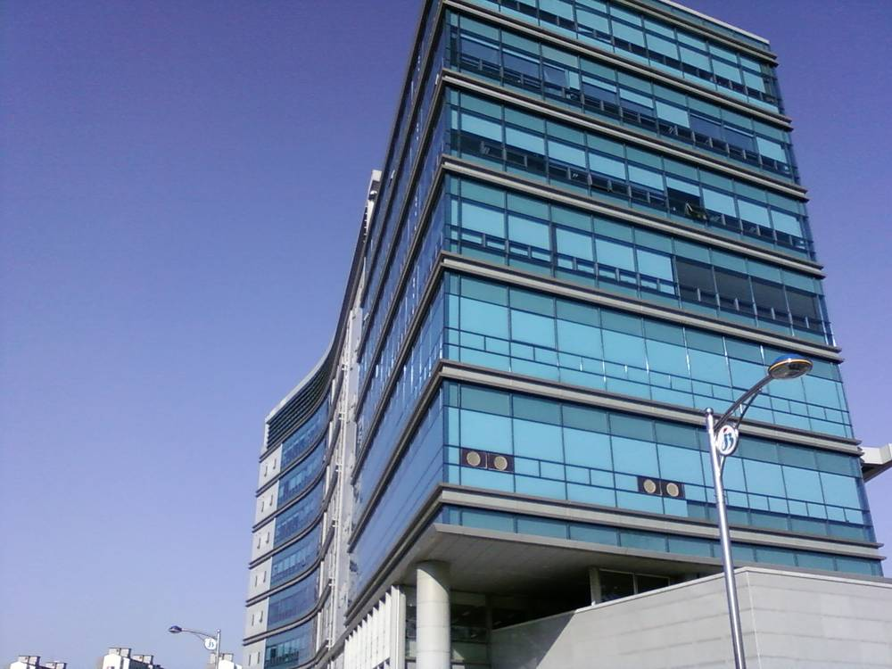
영암 2GW 집적화단지, 사업계획 자료 없이 동의서만 받아…기존 민간 임대계약 처리엔 "당장 답하기 어렵다"
23일 토지소유자 간담회 쟁점 정리, 예정지 땅 대부분 이미 민간업체와 개별 계약…영농형 아닌 일반 태양광으로 농지 일시사용 최대 23년, 빠르면 2029년 착공
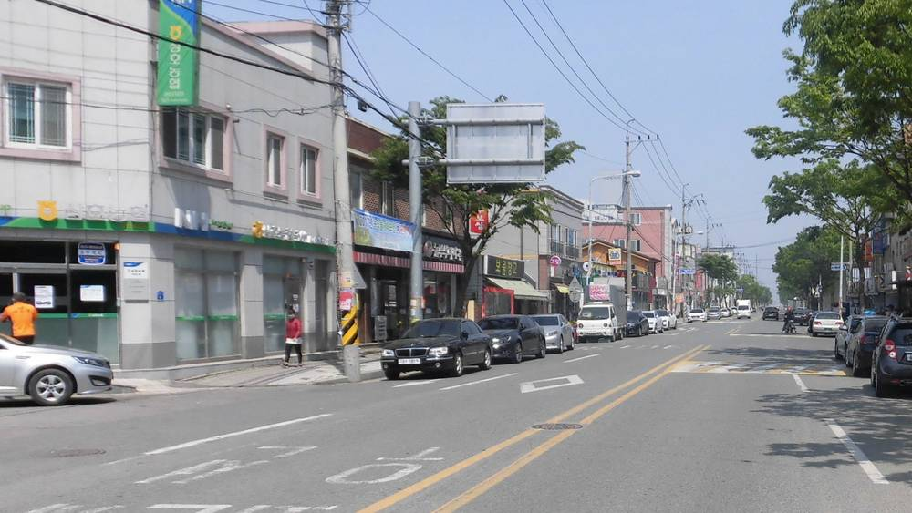
인천 앞바다 해상풍력 7GW 앞두고 연구진 미래전략안 발표…어업인 상생·지역 전력 지산지소·섬과 원도심 편익 공유 등 22개 과제
인천TP 시민포럼서 임효숙 동국대 교수 3대 분야·9대 중점전략 제시…인천시 확정 정책 아닌 연구진 안, 11월 의견수렴 거쳐 12월 중순 최종안
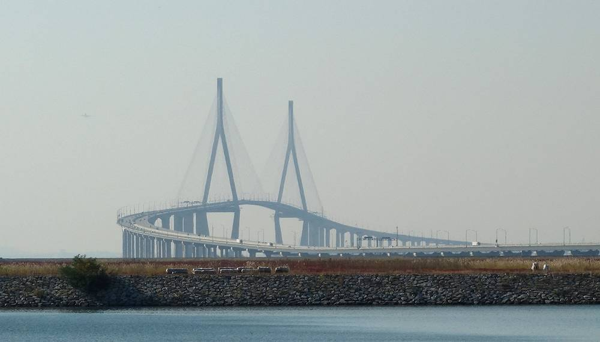
윤희신 태안군수, 주민 수용성 없으면 해상풍력 승인 못 한다…군 추진 집적화단지는 주민 이익공유 기반
태안군개발위원회 군정 현안 간담회서 밝혀…태안해상풍력 행정절차엔 찬반 의견 함께 제출, 반대 어업인·단체와 충분히 협의하라고 사업자에 주문
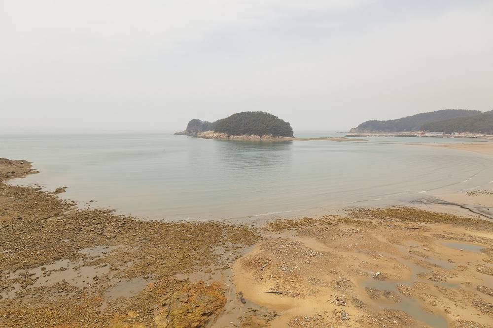
제주, 제2기 분산에너지 특구 신청 모델 3개 내놔…신례1리 100세대 이웃 간 전력 직거래, 함덕 임대주택 48세대 지붕 태양광 공유
같은 변전소 생활권 660만㎡ 안에서 한 해 발전량 70% 이상을 직접 쓰는 '커뮤니티 마이크로그리드형'…11월 5일까지 도민 의견 받아 신청, 지정 여부는 12월 결정

오산시, 공영주차장 4곳에 태양광 1,217kW 시 직접 운영 추진…판매수익 담을 기후대응기금 조례안 마련
삼미·은계·독산성동문·은빛개울공원 주차장 대상, 공공건축물로 넓힐 계획…에너지 조례 전부개정안엔 '시민참여형 에너지 사업 지원 강화' 담겨
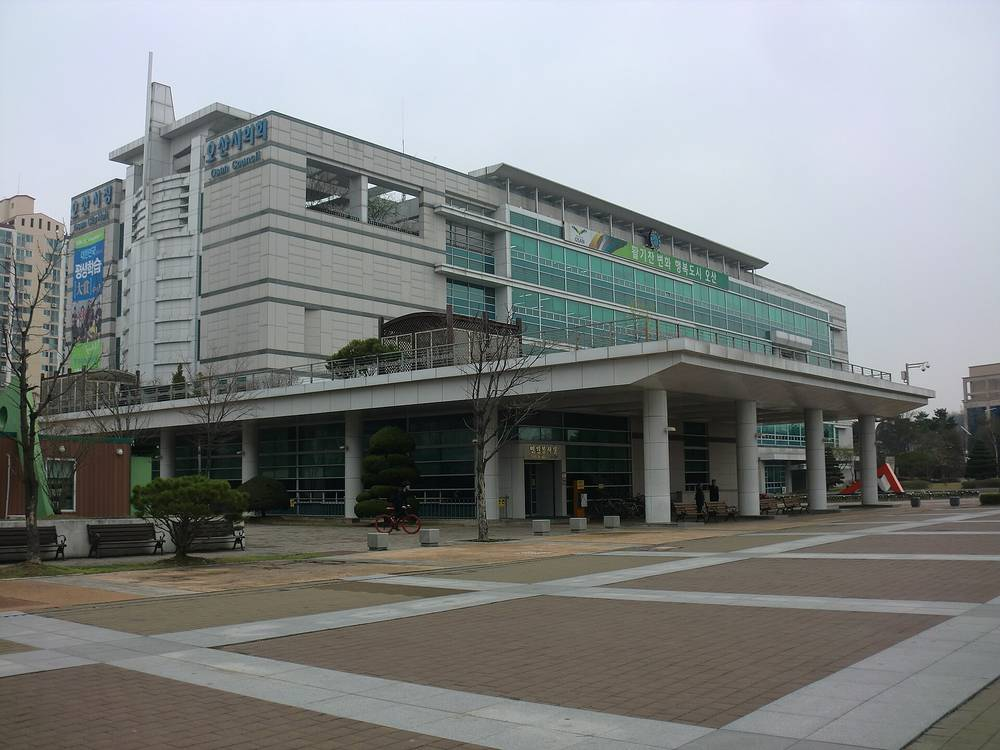
경기도 적극행정 최우수로 뽑힌 안성 금석천 RE100공원, 6개월 뒤 사업 접어…19억5,000만 원 계획에 토지 매입비 약 40억 원 빠져
폐천부지 점용 전제로 짰지만 땅이 용도폐지돼 무상 사용 막혀…시의회 답변선 4필지 중 3필지가 2023년 용도폐지, 6,300만 원 설계용역은 중도 종료
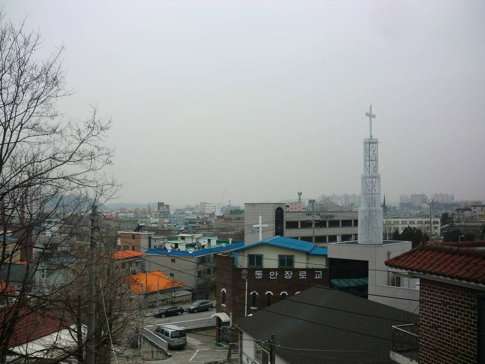
수도권매립지 2매립장 위 154만㎡ 쓰임새 시민 숙의 시작…태양광·공원·식물원·UAM 시험장 놓고 2027년 3월 토론회
인천시, 29일 시민숙의 학습마당 열어…폐기물 8억4,717만 톤 묻은 땅, 기후부 태양광안에 주민 반발 뒤 숙의로 돌려, "특정 시설 결정된 것 아냐"
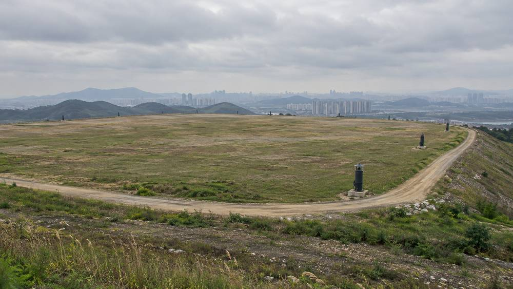
평창군, 월 15만 원 '평창형 기본소득' 재원으로 풍력·태양광 수익 꼽아…민선 9기 안 지급 목표
정부 농어촌 기본소득 공모 국·도비와 신재생에너지 사업 수익을 함께 쓰는 '투트랙' 구상, 8월 군청에 에너지전략 TF…공모 선정 여부·발전 수익 규모·재원 구조는 아직 안 나와
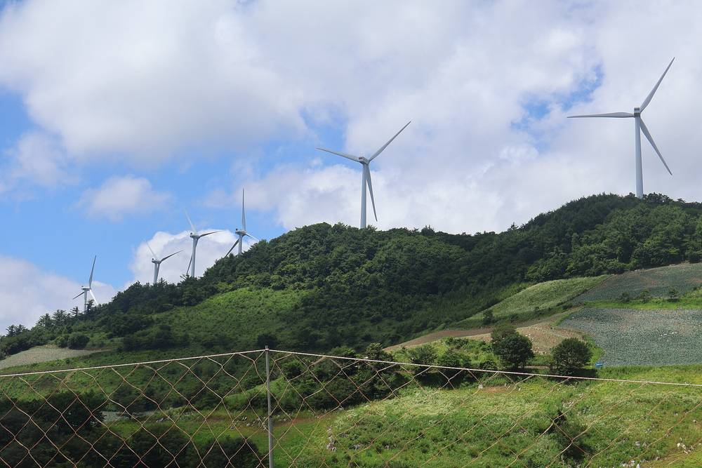
서산 관내 발전용량 68만kW 중 주민 수익 마을발전소는 218kW, 0.03%…시의원 "주민참여·개발이익공유 조례안 준비"
김애란 서산시의원, 첫 시정질문서 주민협동조합 설립 컨설팅·이익 배분 기준 마련에 집행부 협조 요청…조례안은 발의 전 단계, 재생에너지 대목 시 답변은 알려지지 않아

제주 한림해상풍력 인근 3개 마을, 총사업비 4.7% 투자해 배당…추자해상풍력은 '주민 1순위·도민 2순위' 투자 구상
기존 풍력은 당기순이익 17.5%를 공유화 기금으로…추자 재공모는 연 1,300억 원 고정 조건 대신 다른 방식 검토, 2.37GW 전력 육지 송전엔 해저연계선 900MW 한계

제주도, 주민참여 탄소중립 선도마을 2곳 11월 중순 공개모집…2026~2030년 112억 원 투입
행정동·리 단위로 생활·자원순환·에너지전환 묶어 마을 단위 실증…태양광 설치·마을 다용도시설 RE100 전환 등은 예시, 추진 전후 탄소배출량으로 효과 검증
천안 공영주차장 태양광 의무 대상 20곳 중 착수 0곳…공공 유휴부지 더한 1차 추산 28곳·8MW 이상·약 130억 원
지난해 11월 법 개정으로 주차구획 1,000㎡ 이상 공영주차장 설치 의무…시는 재정 부담에 민간 참여 병행 검토, 시민단체는 50면 이하 주차장 확대·2030년 20% 목표 제안
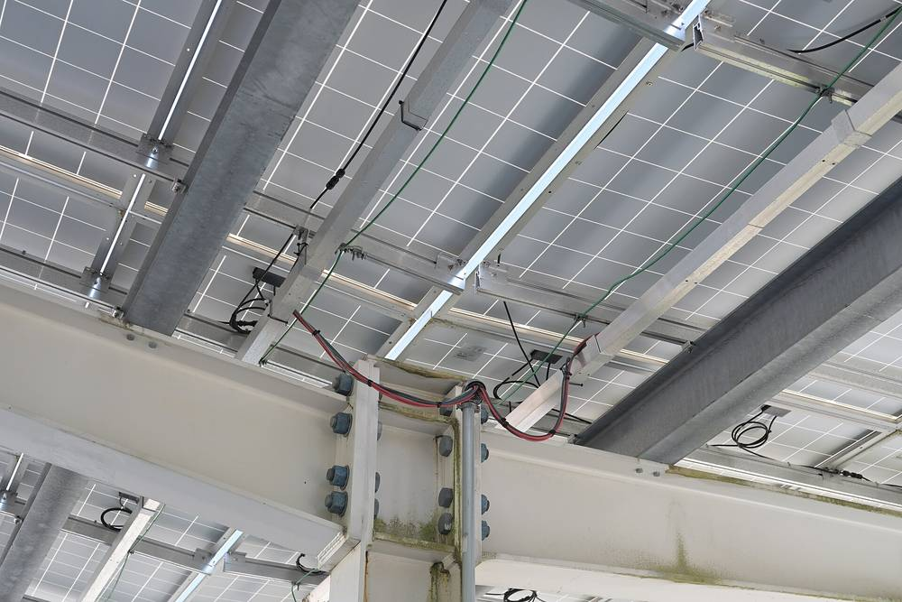
류경완 남해군수, 에너지 자립의 섬 군정 핵심으로…배전망 ESS·분산에너지 특화지역 공모 대응, 햇빛소득마을 수익 주민에게 돌리겠다
취임 100일 인터뷰서 송배전망 수용 용량 부족을 재생에너지 확대의 걸림돌로 꼽아…한국에너지공단 이사장에게 ESS 사업 유치·햇빛소득마을 활성화 건의, 공모 선정·마을 수는 아직 없어
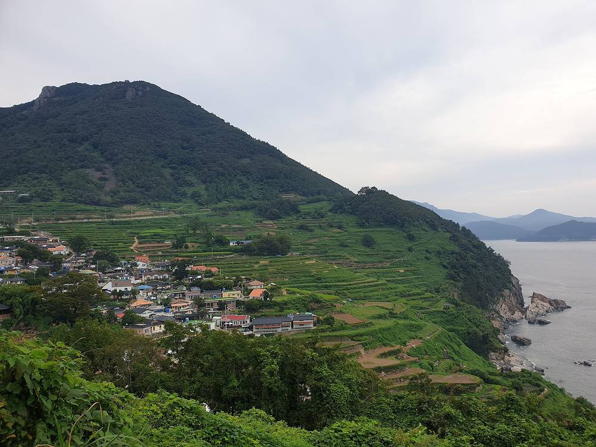
영암군, 삼호 미암 간척지 약 1,700만㎡에 2GW 이상 재생에너지 집적화단지 추진…토지소유자 등 200여 명과 간담회
공공 주도 입지·마스터플랜, 공모로 사업시행자 뽑아 주민참여 비율·수익 환원 규모 심사 계획…동의서는 정부 지정 신청 자료, 개발 이익은 주민참여형 기본소득 재원으로
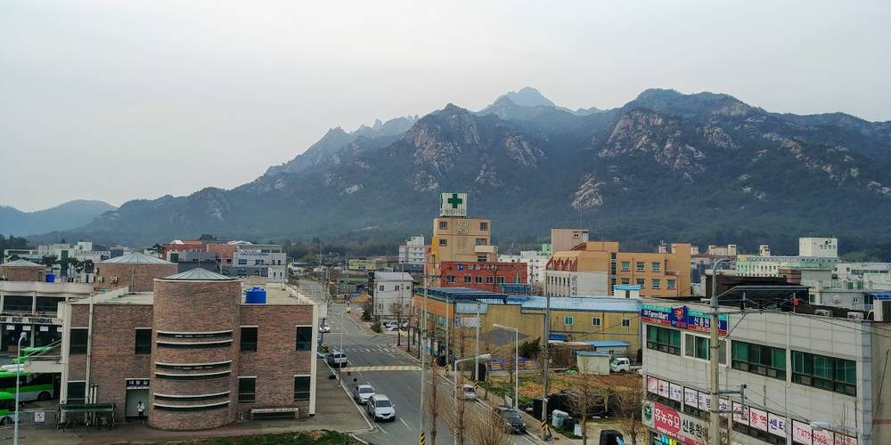
함평 재생에너지 특구 추진위, 정부·국회에 '군민주도형 국가 에너지생산 선도지역' 지정 요구…특별법 등 4대 과제 제시
군 전체를 발전·ESS·송변전·산단을 함께 계획하는 국가전략 공간으로 묶자는 구상…장기 8GW, 입지 기피시설도 받겠다며 11월 16일 서명·건의서 전달 예정, 특구·특화지역·국가산단 모두 요구 단계

국회서 동 지역 햇빛소득마을 요구 나오자 제주 동 지역 문의 잇따라…출력제어 탓 마을마다 억대 ESS 부담이 걸림돌
제주도 관계자, 행안부가 의견 받는 중이며 연내 기준 발표 예정이라고 전해…확대 여부는 한전 협의 남아 예측 일러, 애월 용흥리·남원 위미1리 선정·3차 공모 이달 말 마감

전남연구원 신안 발전 구상 보고서, 햇빛연금·바람연금을 기본소득형 에너지복지로 키우자 제안…햇빛연금 2025년 75억 원에서 2030년 130억 원 목표
해상풍력 2030년 3.5GW·2035년 8.2GW, 태양광 2030년 1,200MW 목표 담아…주민참여 협동조합·지역활성화펀드 연계, 권역별 해상풍력 유지보수 거점·RE100 산업단지도 제시
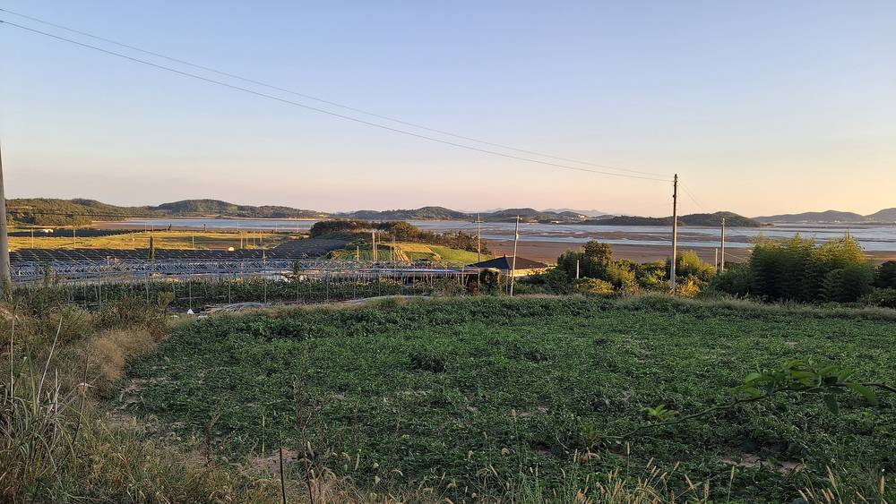
새만금희망태양광 99MW, 주민참여 두 갈래 검토했지만 전북도민 펀드는 금감원 지역 제한 지적에 막혀
총사업비 1,575억 원, 2021년 12월 상업운전…반경 1km 주민 약 63억 원 규모 주민법인 투자 추진, 회사는 연 6억6,100만 원 지역 기부·전북 중고생 장학금 설명

제주도, 2035년까지 해상풍력 5GW 개발하고 바람연금·햇빛연금 확대 구상
위성곤 지사 취임 100일 인터뷰서 추자해상풍력 2GW 포함 개발, 재생에너지 기반 그린 AI 데이터센터 조성 제시…연금 확대 규모·재원은 밝히지 않아
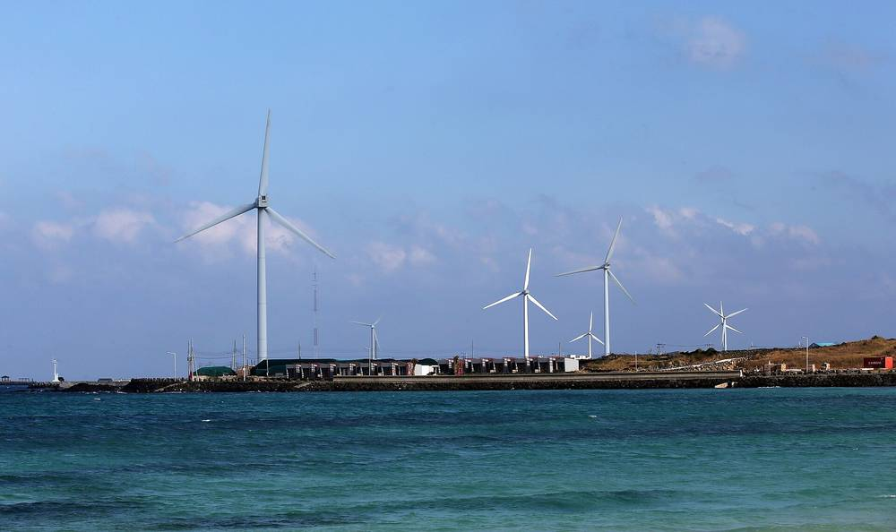
다대포 해상풍력 사업자, 사하구 청년회와 청년 고용·지역 공급망 협약…99MW 고정식 해상풍력
부산해상풍력발전, 교육·훈련·취업 연계와 관광자원화 추진…사업자 측 주민조사 찬성 56.7%·반대 26.7%, 고용효과 1,112명 분석, 주민 지분·배당 방안은 협약에 없어
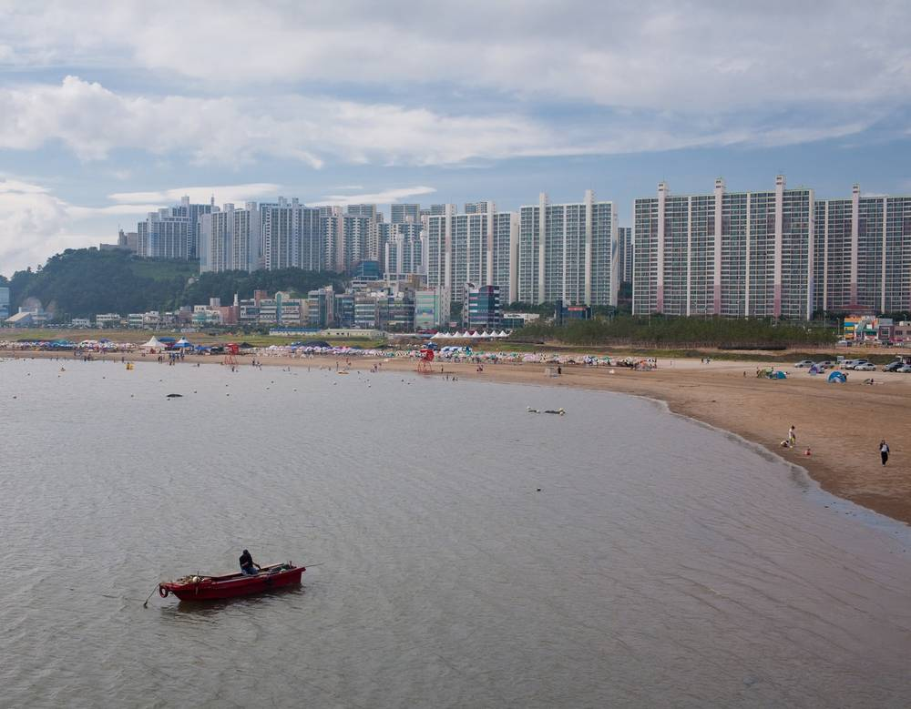
인천 주안·부평산단, 정부 에너지자급자족 인프라 공모 선정…공장 지붕·주차장에 태양광 10MW
2029년까지 국비 200억 원 포함 320억 원 투입해 연 1만2,400MWh 생산 계획…발전 수익으로 '햇빛소득 기금' 11억 원 만들어 입주기업·근로자에 돌려준다는 구상

고흥군, 2030년까지 단독주택 3곳 중 1곳에 태양광…2만7,000동 중 9,000동 목표 주택 태양광 보급 3033 사업
9월 현재 보급률 약 23%·6,200여 가구…올해 융복합 지원 5개 읍면 42억9,800만 원, 주택지원 100가구 4억7,600만 원
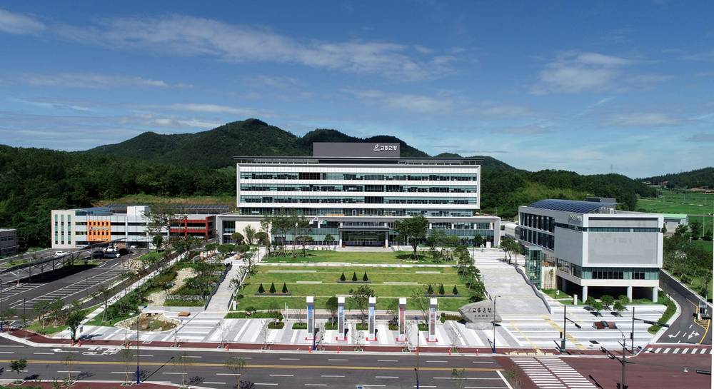
영천시의회 상임위, 태양광 주거밀집지역 이격거리 300m→100m 완화 조례안 수정 가결
산업건설위, 도로 이격거리 기준도 삭제…적용 대상은 '10호 이상'에서 '5호 이상'으로 고쳐 통과, 재생에너지법 시행령 개정에 맞춘 조례 정비
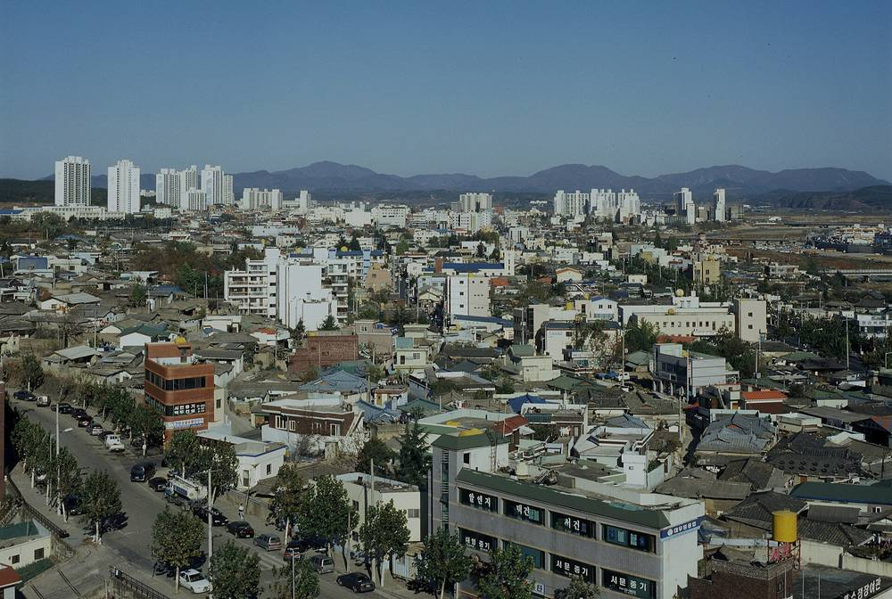
전남연구원 "진도에 해상풍력 3.6GW·태양광 1.4GW"…주민 지분 참여 '진도형 에너지 연금' 구상
'진도군 발전 구상' 보고서, 영농형 태양광 2035년 1GW·수상태양광 최대 400MW 제시…2031년부터 해상풍력 수익 복지·주거·교통에 재투자 구상
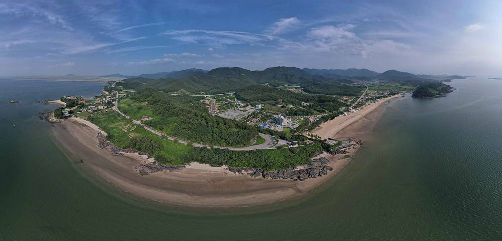
함평 재생에너지 특구 추진위 "345kV 변전소 못 잡으면 8GW·RE100 산단 2년 넘게 늦어져"…27일 기자회견·11월 3일 결의대회 예정
오민수 상임대표 군민 호소문, 변전소 확보를 4대 과제 맨 앞에…심의 결과는 추진위 설명으로 12월 말~내년 1월 초 전망, 특구·변전소·산단은 정해진 것 없어
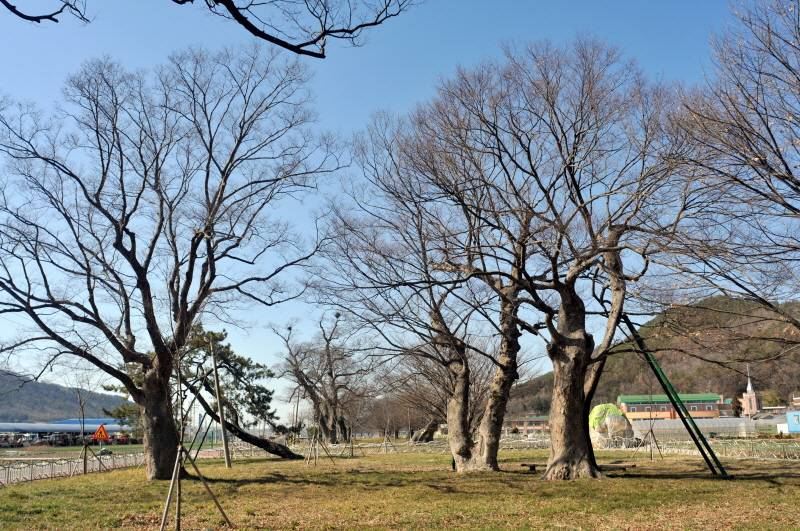
보령시, 장동혁 국민의힘 대표와 정책간담회…공공주도 태양광·해상풍력 집적화단지 육성 건의
석탄화력 단계적 폐쇄 대응 제도 개선도 요청…폐지지역 특별법 지원 소급 적용·안보전원발전기 지원 근거·미래대응기금 배분 기준에 피해 영향 반영

광주 전력자립률 9.3%·전남 197.9%로 21.3배 격차…광주기후에너지진흥원, 햇빛·바람연금 참여 자격·배분 기준 명확히 해야
통합 이전 2023년 기준 분석…두 지역 지역에너지계획 133개 사업은 기간·지표 달라 단순 통합 어려워, 2035년 재생에너지 설비 목표 합계 3만8,858MW
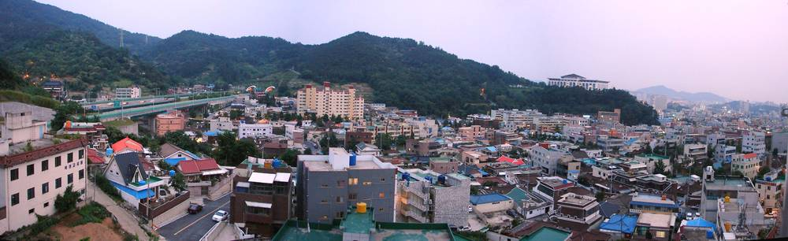
화천군, 파로호 수면·군부대 유휴부지 태양광 수익 나누는 화천형 햇빛연금 구상…군민 1인당 월 10만~15만 원 목표
김세훈 군수 취임 100일 인터뷰서 이르면 3~4년 안 지급 목표 밝혀…설비 용량·사업비·사업 주체는 아직 공개 안 돼, 농어촌 기본소득 월 15만 원과 합쳐 월평균 25만~30만 원 구상
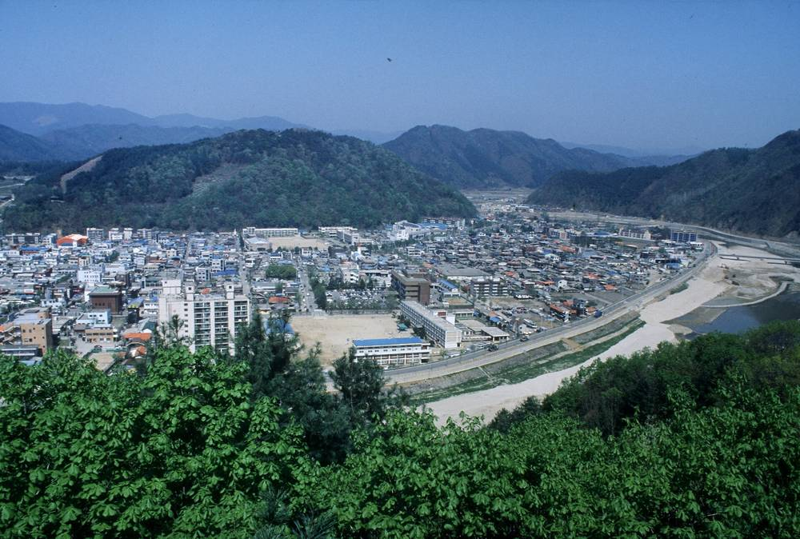
신안 자은 해상풍력 96MW 상업운전 1년 5개월…8.2GW 단지 밑그림 속 송전선로 경유지 주민 수용성이 숙제
우이도~임자도 1만2,000㎢ 해역에 고정식 500기 10년 안에, 흑산도 해상엔 10GW 부유식 추진…임자~신장성 송전선로 지나는 함평·영광·장성 민원 부담
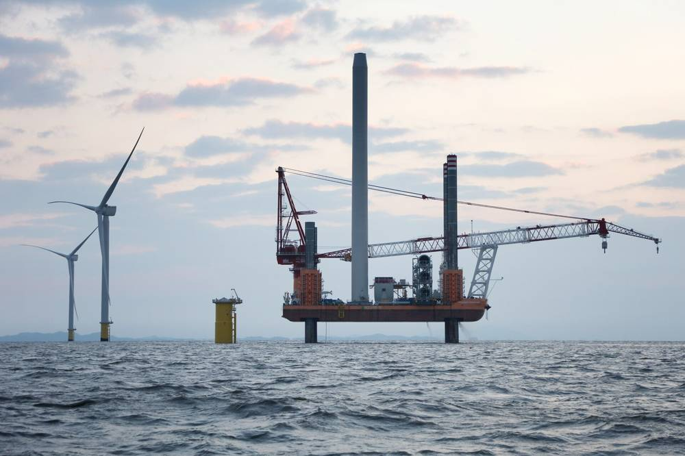
인천햇빛발전협동조합, 공영주차장 태양광 수익 시민배당·지역환원 조례 요구
1,000㎡ 이상 공영주차장 태양광 의무화 뒤 인천시·iH 약 40MW 사업 추진…조합은 시민펀드 넘어 협동조합의 시공·소유·운영 참여 보장 주문
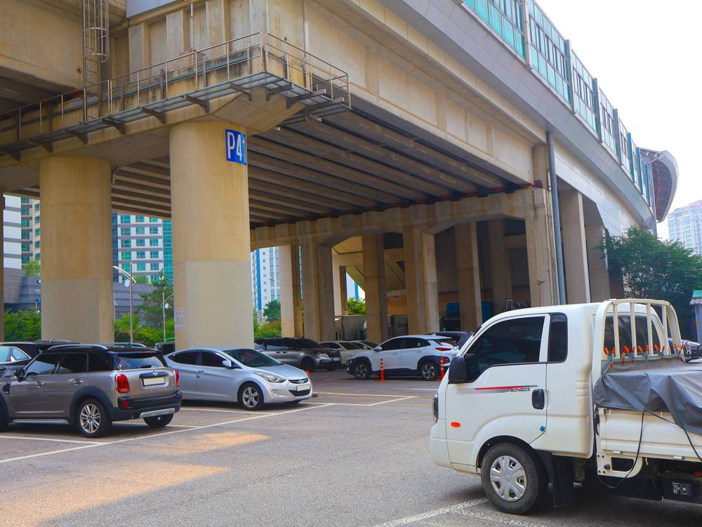
영덕군 에너지종합계획 중간보고…산불 피해지에 200MW급 공공주도 풍력, 햇빛소득마을 조성 검토
18개소 631.6MW 풍력에 해상풍력 입지 발굴·태양광 보급 더해…주민 참여 넓혀 발전 이익 군민에 돌리고 개발이익 공유 확대, 12월 최종안 확정
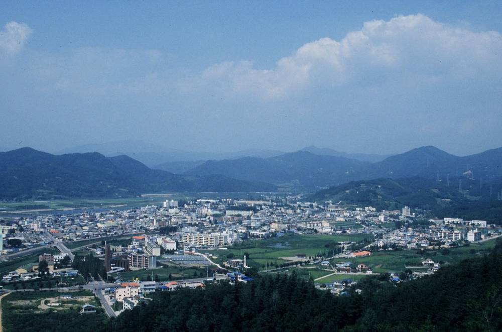
미국 뉴욕주 리버헤드, 닫은 매립장 위 태양광 7MW·배터리 13.68MWh 완공 앞둬…요금 크레딧 60%는 주민·소상공인 120여 곳 몫
읍은 땅 빌려주고 크레딧 40%와 연 임대료 15만 달러 이상 받아…민간 개발사 CVE가 짓고 25년 운영

공주시 공영주차장 태양광, 공개경쟁 없이 사업자 내정했나…행정사무감사서 절차 논란
사업 대상지 21곳·10곳·7곳 문서마다 달라, 시 답변서도 임대형이 직영보다 수익성 낮을 수 있다고 적어…교통과장 법에 맞는 기준 마련하겠다
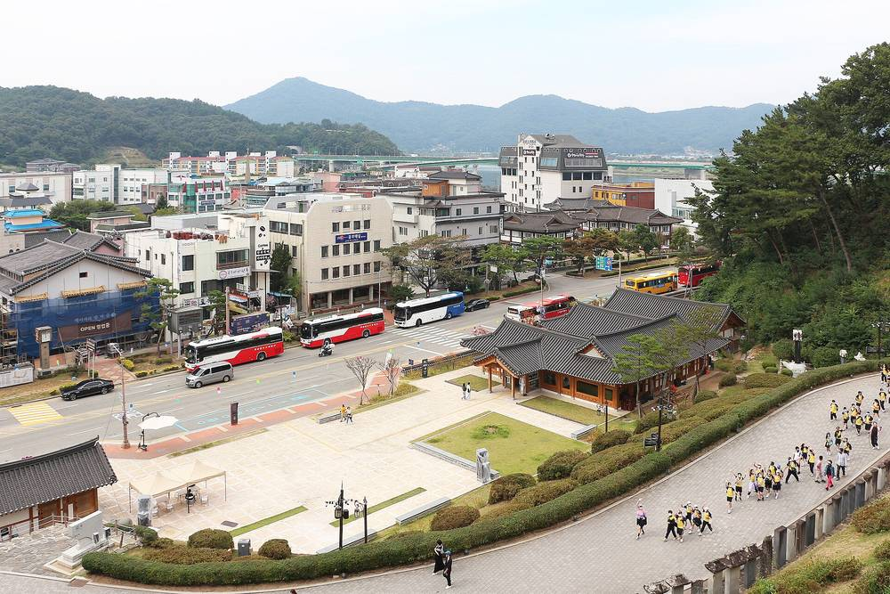
청주시, 2027~2031 제3차 지역에너지계획 5대 전략 마련…시민참여형 재생에너지·RE100 산단 추진
최종보고회서 시민과 산업이 함께 만드는 에너지 혁신도시 비전 제시…소비·참여·산업·시스템·융합 혁신, 전문가 의견 반영해 보완 뒤 세부 사업 단계 추진
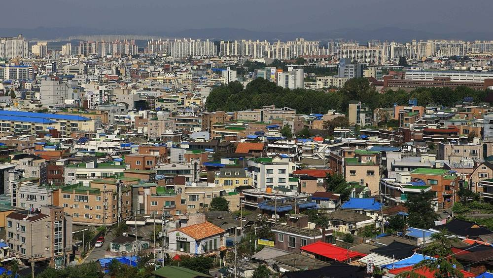
대전충남녹색연합, 주차장 태양광 의무 대상 30곳 중 설치 1곳…대전시에 재생에너지 중심 로드맵 촉구
검토 중인 13곳만 지어도 약 4,636kW·연 592만kWh로 1,500여 가구분 추산…수소·복합화력 중심 제7차 지역에너지계획 전면 재수정 요구
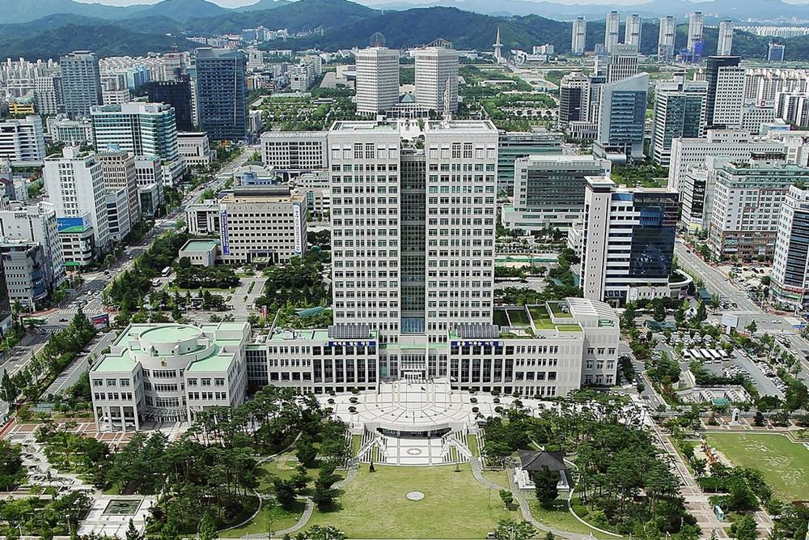
서천군의회 조성훈 의원, 장항국가생태산단서 생산 없이 태양광만 돌리는 입주업체 점검 요구
행정사무감사서 공장 건립·생산설비·실제 가동·고용 실태 확인 촉구…입주·변경계약과 발전사업 허가조건 이행 여부 관계기관과 확인, 위반 땐 법령·계약 따라 조치해야

호남 재생에너지 계통 넓어진다…전남연구원, 여수·광양 산단 수요 연결과 주민 이익공유를 한 체계로 운영 제안
정부, 호남 수용능력 송전단 약 27GW·배전단 약 12GW 확대 전망…10월부터 기존 대기 사업자에 우선 배분, 신규 접속 신청은 2027년 1월부터
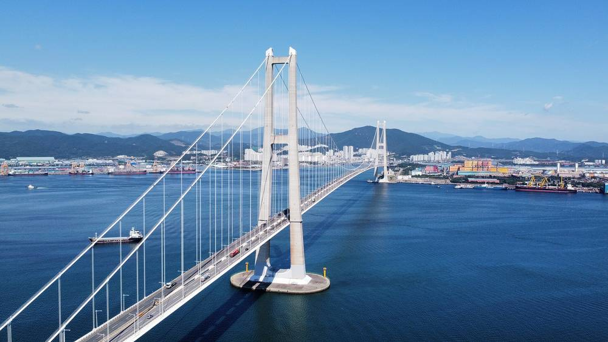
광주 전력자립률 9.3%·전남 197.9%…광주기후에너지진흥원, 통합특별시 에너지 연계 3대 축 제안
탄소중립 정책브리프 제14호로 두 시·도 제6차 지역에너지계획 분석…광주는 가정·상업·수송 78.6% 도시형, 전남은 산업 89.6% 산업형…착수 조건 갖춘 사업부터 단계적으로 추진하자고 제언
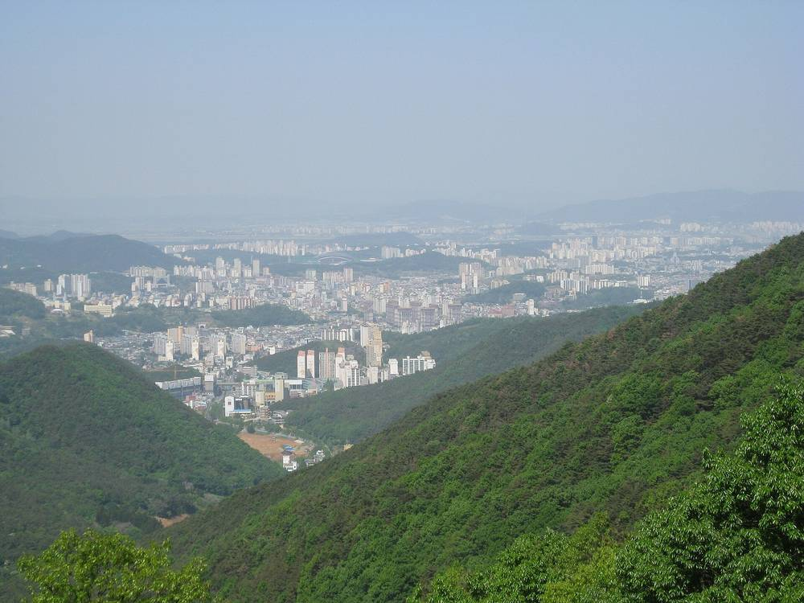
창원시, 덕산매립장 유휴부지 태양광 수익으로 문 닫은 진해 소죽도찜질방 다시 연다
소각장 폐열 끊겨 7월부터 운영 중단…태양광 발전수익은 운영비로, 매립장 증설 주민지원금은 리모델링에, 2028년 7월 재개장 추진
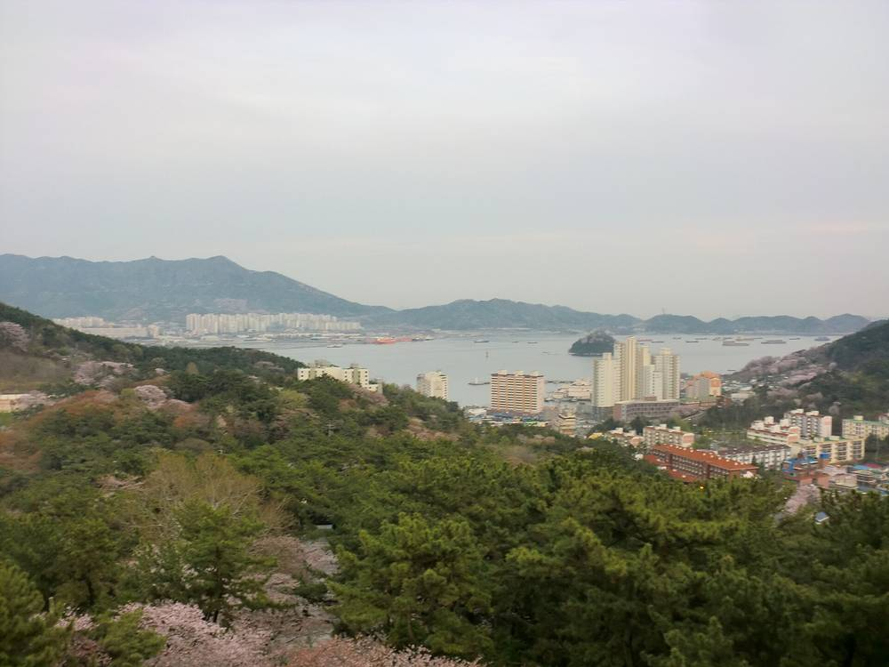
영광군, 2027년부터 군민 1인당 연 20만 원 재생에너지 이익 배당 추진
해상풍력 등 이익공유금·발전사업자 기부금이 재원…기부금 의존 한계에 정부와 사회보장제도 신설 협의, 4개 마을 195kW 태양광은 마을기금 적립
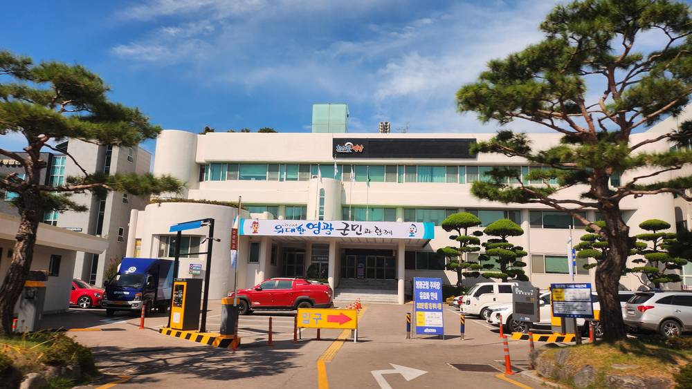
곡성군, SK이터닉스·유선기업과 육상풍력·태양광 협약…군민펀드 도입 검토
기업은 사업 개발·입지, 군은 행정 지원 맡기로…발전용량·사업비·부지·수익 배분 방식은 아직 정해지지 않아

김해시, 공영주차장 14곳·정수장에 태양광…발전 수익 재투자하는 재정 순환 구조 만든다
2028년까지 공영주차장 2,700kW 설치, 7곳은 직영·7곳은 민간 임대…삼계정수장 500kW는 12월 준공 목표


地域
平昌郡、蓬坪・ユポ里の150MW太陽光で業務協約へ…発電事業の持ち分で郡民のベーシックインカム財源づくり
10月の雲頭嶺風力に続き5日にチョンサン・グループと協約予定、両事業とも2029年の商業運転目標…郡有地の遊休地や取り消された風力団地の再開発を検討し2035年まで持ち分拡大、持ち分比率・配当額は未定
ソウルの電力自給率、1年で11.6%から6.8%に…ノ・ヨンス市議、統計から漏れたベランダ太陽光40MWの統合管理を要求
ソウル市議会の気候環境本部への行政監査…ソウル市は小規模ベランダ太陽光の管理は難しいが案内中、普及拡大には国内産業の支援が必要と答弁
「宅地・産業団地の公社に任せれば再エネは後回し」…全南光州市議会の行政監査で「都市開発エネルギー公社」統合の再検討とエネルギー公社の別途設立を要求
パク・ヒョンデ議員「両公社の売上総利益に占めるエネルギー事業の比率は1.2%・0.15%」…キム・スンナム光州都市公社社長「専門性を備えたエネルギー公社が発足すべきだとの考えに変わりはない」
1つの筆地に太陽光2基を別々に許可…合わせれば2.3MWなのに「2MW超」の周辺地域支援を免れるのか、韓国・高霊郡大伽耶邑の住民が反発
大伽耶邑本館里の同じ筆地に1.3MW・1.0MWを個別に許可…「容量を分けて法定支援の対象から外れかねない」との指摘、高霊郡「法人が異なり施設を別々に備えれば系統連系は拒みにくい」
「高速道路の防音トンネルに市民の太陽光発電を」…韓国・全南光州市議会のパク・ピルスン議員、行政監査で都市型の基本社会モデルとして提案
湖南高速道路の拡張工事に伴う防音トンネルに太陽光、市民参加・収益共有方式の検討を求める…都市内の農村の邑・面・洞への農漁村基本所得の拡大も要求
同じダムの水上太陽光、陜川は住民1,400人余りの投資で稼働し龍潭は止まった…羅州湖9年の対立に照らした「住民の意見を聞く順序」
陜川ダムは郡と共に25人の住民協議体をつくり説明会・公聴会を10回余り（水資源公社資料）、龍潭ダムは事業者主導の説明会への反発の末に中断を通知…羅州湖は許可申請の後にようやく意見照会、農漁村公社・事業者・羅州市の回答はまだ
珍島の郡有干拓地41MW太陽光「賃貸可能」回答問題で副郡守「個人の土地だと思った」…「改めて入札・契約が必要、許可も出ていない」
2025年12月に建設課が「条件付き可能」と回答した後に事業者が許可申請、副郡守「部署間のミス、課長から報告がなかった」…既存の営農法人の賃貸は2028年末まで、最終意見書に賃借権がどう反映されたかは説明なし
済州の漁民対策協議会、洋上風力の協議に「実際に操業する漁業者」の参加を要求…村への利益共有だけでは漁場喪失は埋まらない
漢東・坪岱、大静、新昌、楸子の洋上風力を挙げ、着工前の操業実態調査と官民協議会の設置を求める…済州道・事業者の立場はまだ出ていない
珍島郡、営農法人の賃貸が2028年まで残る郡有干拓地に太陽光の賃貸可能と回答…41MW・410億ウォンの民間事業の先取り論争
智山面の保全干拓地35筆地で民間発電事業者が許可申請、既存の5営農組合法人は同意していないと表明…郡は手続きを再検討中とされるが直接の説明はまだない
趙仁鎬・全南光州統合特別市議員、莞島・金日の600MW洋上風力の周辺海域に海苔など海藻養殖免許地の新規確保を提案
5分間自由発言で養殖適地調査と2027・2028年度養殖場利用開発計画への反映、特別市・莞島郡・発電事業者・漁業者の協議体づくりを要求…若手漁業者の定着に養殖空間が必要と強調、執行部・事業者の答弁はまだない
止まっていた江原道高城・屹里の風力、郡30%・住民20%出資のSPCを設立し「住民主導型」で再推進
杆城邑屹里の10万9,776㎡に7MW級発電機7基、事業費約1,500億ウォン…先月から道都市計画委員会の審議など行政手続きへ、SPCは今後設立予定で送電線が残る課題
慶尚南道で離隔距離条例を持つ15市郡すべてが改正施行令の基準と食い違い…道路の離隔距離をそのまま維持、宜寧は住宅地から700m
9月18日施行の再生可能エネルギー法施行令は住宅から200m以内のみ認め、道路基準の根拠はなし…巨済・晋州など8市郡は住宅から500m、昌原・金海・梁山は条項なし
済州の再生可能エネルギー利益、「直接配当」と「公共寄与」を分けて制度に…地元企画、常設協議体・情報公開・成果指標を盛り込んだ実行ロードマップ求める
既存風力団地の実態調査→モデル事業→評価・補完→拡大の段階を提示、電気料金削減額・住民配当額・還元額・参加率で成果を検証すべき…民間事業者への負担はまず法的根拠から
風力が止まった加波島、公的機関主導の「RE100村」で再挑戦…風力600kW・太陽光990kW・ESS 7MWh
最初のエネルギー自立島は設備故障の末に2024年9月に風力撤去、現在は150kWディーゼル3台が電力供給…韓電・エネルギー公団・韓電KDNが2026～2027年に推進、予算は220億ウォンの構想から今年80億ウォンに
舒川郡議会、農漁村基本所得の支援・基金条例を議決…基金の使途に「住民収益型再生可能エネルギー事業」を盛り込む
議員提出の条例2件を原案可決、基本所得は地域通貨で支給し、基金は2031年末まで一般会計繰入金・運用収益・寄付金で運営…支給額・対象規模・支給開始日はまだ決まっていない
済州・翰林洋上風力の住民投資300億ウォンのうち200億ウォンは公団の政策融資…投資配当と道民への公共還元を分けるべきとの提案
近隣3集落の住民1,009人が協同組合で投資、低利融資の対象は距離・居住期間・漁業権被害で限定…楸子洋上風力の「住民優先、道民へ拡大」構想には金融コストの格差や配当から外れる懸念、地元日刊紙の企画連載最終回での提案
坡州市、エネルギー転換フォーラムのエネルギー転換賞・地方自治部門を受賞…公共再エネの企業向け直接PPA、マンション向け節約電気料金制の推進を評価
10月28日の「2026エネルギー転換の夜」で授賞、市は基礎自治体として初の受賞と説明…企業への供給容量や電気料金の削減規模などの数字は発表になし
全北の16校の屋根・駐車場に太陽光…「ヘッビッイウム学校」モデル事業、業者選定に着手
教育部の特別交付金約25億ウォン、本館棟8校・駐車場4校などに設置…調達サイト「ナラジャント」の公告5件（8校）はすべて随意見積・本店全北要件、残る8校の公告はまだ検索されず
霊岩の2GW集積化団地、事業計画の資料なしに同意書だけ配布…既存の民間賃貸契約の扱いは「今すぐには答えにくい」
23日の土地所有者懇談会の争点を整理、予定地の土地の大半は既に民間業者と個別契約…営農型ではない一般の太陽光で農地の一時使用は最長23年、早ければ2029年着工
仁川沖の洋上風力7GWを前に研究陣が未来戦略案を発表…漁業者との共生・地域電力の地産地消・島と旧市街地の便益共有など22の課題
仁川テクノパークの市民フォーラムで東国大のイム・ヒョスク教授が3分野・9重点戦略を提示…仁川市の確定政策ではなく研究陣の案、11月の意見集約を経て12月中旬に最終案
ユン・ヒシン泰安郡守、住民の受容性がなければ洋上風力は承認できない…郡が進める集積化団地は住民利益共有の基盤
泰安郡開発委員会の郡政懇談会で表明…泰安洋上風力の行政手続きには賛否両方の意見が提出、反対する漁業者・団体と十分協議するよう事業者に求める
済州道、第2期分散エネルギー特区の申請モデル3つを公表…新礼1里100世帯は近隣同士で電力を直接取引、咸徳の賃貸住宅48世帯は屋根上太陽光を共有
同じ変電所の生活圏660万㎡内で年間発電量の70%以上を直接消費する「コミュニティ・マイクログリッド型」…11月5日まで道民の意見を募って申請、指定の可否は12月に決定
烏山市、公営駐車場4カ所に太陽光1,217kWを市直営で推進…売電収益を積み立てる気候対応基金の条例案を用意
サンミ・ウンゲ・トクサンソン東門・ウンビッケウル公園の駐車場が対象、公共建築物へも拡大へ…エネルギー条例の全部改正案に「市民参加型エネルギー事業への支援強化」
京畿道の積極行政最優秀に選ばれた安城クムソクチョンRE100公園、6カ月後に事業中止…19億5,000万ウォンの計画に土地購入費約40億ウォンが抜けていた
廃川敷地の占用を前提に計画したが土地が用途廃止され無償使用できず…市議会答弁では4筆のうち3筆が2023年に用途廃止、6,300万ウォンの設計業務は途中終了
首都圏埋立地第2埋立場の上部154万㎡の使い道、市民熟議が始まる…太陽光・公園・植物園・UAM試験場を巡り2027年3月に討論会
仁川市、29日に市民熟議の学習会…廃棄物8億4,717万トンを埋めた土地、気候部の太陽光案に住民が反発し熟議へ、「特定の施設は決まっていない」
江原道平昌郡、月15万ウォンの「平昌型ベーシックインカム」の財源に風力・太陽光の収益…民選9期中の支給目標
政府の農漁村ベーシックインカム公募による国・道の補助金と再生可能エネルギー事業の収益を併用する「ツートラック」構想、8月に郡庁にエネルギー戦略TF…公募選定の可否・発電収益の規模・財源構造はまだ示されず
瑞山市内の発電容量68万kWのうち住民が収益を得る村の発電所は218kW、0.03%…市議「住民参加・開発利益共有条例案を準備」
キム・エラン瑞山市議、初の市政質問で住民協同組合設立のコンサルティングと利益配分基準づくりへの協力を執行部に要請…条例案は発議前の段階、再生可能エネルギー部分への市の答弁は伝えられず
済州・翰林洋上風力の周辺3集落、総事業費の4.7%を出資して配当…楸子洋上風力は「住民が第1順位・道民が第2順位」の出資構想
既存の風力は当期純利益の17.5%を共有化基金に…楸子の再公募は年1,300億ウォンの固定条件に代わる方式を検討、2.37GWの電力を本土へ送るには海底連系線900MWの壁
済州道、住民参加型の炭素中立先導マウル2カ所を11月中旬に公募…2026～2030年に112億ウォン投入
行政洞・里単位で生活・資源循環・エネルギー転換を束ねて集落単位で実証…太陽光設置・集落の多目的施設のRE100転換などは例示、事業前後の炭素排出量で効果を検証
天安市、太陽光設置が義務の公営駐車場20カ所で着手ゼロ…公共遊休地を加えた1次推計は28カ所・8MW以上・約130億ウォン
昨年11月の法改正で駐車区画1,000㎡以上の公営駐車場に設置義務…市は財政負担から民間参加の併用を検討、市民団体は50面以下の駐車場への拡大と2030年20%目標を提案
韓国・南海郡のリュ・ギョンワン郡守、エネルギー自立の島を郡政の柱に…配電網ESS・分散エネルギー特化地域の公募に対応、太陽光所得村の収益を住民へ
就任100日のインタビューで送配電網の受け入れ容量不足を再エネ拡大の障害に挙げる…韓国エネルギー公団理事長にESS事業の誘致と太陽光所得村の活性化を要望、公募の選定や村の数はまだ示されず
霊岩郡、三湖・美岩干拓地の約1,700万㎡で2GW以上の再生可能エネルギー集積化団地を推進…土地所有者ら200人余りと懇談会
公共主導の立地選定・マスタープラン、公募で事業者を選び住民参加比率・収益還元規模を審査する計画…同意書は政府指定申請の資料、開発利益は住民参加型ベーシックインカムの財源に
咸平・再生エネ特区推進委、政府・国会に郡民主導型の国家エネルギー生産先導地域の指定を要求…特別法など4大課題を提示
郡全体を発電・ESS・送変電・産業団地を一体で計画する国家戦略空間にまとめる構想…長期で8GW、立地が難しい施設も受け入れるとし11月16日に署名・建議書を提出予定、特区・特化地域・国家産業団地はいずれも要求段階
国会で洞地域への太陽光所得村拡大を求める声、済州でも洞地域から問い合わせ相次ぐ…出力制御で集落ごとに億ウォン単位のESS負担が壁
済州道関係者、行政安全部が意見を集めており年内に基準を発表する予定と説明…拡大の可否は韓電との協議が残り予測は早い、涯月・龍興里と南元・為美1里が選定、第3次公募は今月末締め切り
全南研究院の新安発展構想報告書、太陽光年金・風力年金をベーシックインカム型エネルギー福祉に育てるよう提案…太陽光年金を2025年の75億ウォンから2030年に130億ウォンへ
洋上風力は2030年3.5GW・2035年8.2GW、太陽光は2030年1,200MWの目標…住民参加型協同組合・地域活性化ファンドと連携、圏域ごとの洋上風力保守拠点やRE100産業団地も提示
セマングム希望太陽光99MW、住民参加の2つの方式を検討も、全羅北道民ファンドは金融監督院の地域制限の指摘で頓挫
総事業費1,575億ウォン、2021年12月に商業運転…半径1km以内の住民による約63億ウォン規模の住民法人の投資を推進、会社は年6億6,100万ウォンの地域寄付と全羅北道の中高生への奨学金を説明
済州道、2035年までに洋上風力5GWを開発し風年金・太陽光年金を拡大する構想
ウィ・ソンゴン知事、就任100日のインタビューで楸子洋上風力2GWを含む開発と再生可能エネルギーによるグリーンAIデータセンター構想を提示…年金拡大の規模・財源は示さず
多大浦洋上風力の事業者、沙下区青年会と青年雇用・地域サプライチェーンで協約…99MWの着床式洋上風力
釜山洋上風力発電、教育・訓練・就職連携と観光資源化を推進…事業者側の住民調査で賛成56.7%・反対26.7%、雇用効果1,112人と分析、住民の持ち分・配当策は協約に含まれず
仁川・朱安・富平産業団地、政府のエネルギー自給自足インフラ公募に選定…工場の屋根や駐車場に太陽光10MW
2029年までに国費200億ウォンを含む320億ウォンを投じ年1万2,400MWhを発電する計画…発電収益で「日差し所得基金」11億ウォンをつくり入居企業・労働者に還元する構想
高興郡、2030年までに戸建て住宅の3軒に1軒へ太陽光…2万7,000棟のうち9,000棟を目標とする住宅太陽光普及3033事業
9月現在の普及率は約23%・6,200余世帯…今年は融複合支援で5つの邑・面に42億9,800万ウォン、住宅支援で100世帯に4億7,600万ウォン
永川市議会の常任委、太陽光の住宅密集地離隔距離を300mから100mに緩和する条例案を修正可決
産業建設委、道路からの離隔距離基準も削除…適用対象は「10戸以上」から「5戸以上」に修正して通過、再生エネ法施行令改正に合わせた条例整備
全南研究院「珍島に洋上風力3.6GW・太陽光1.4GW」…住民の持ち分参加で「珍島型エネルギー年金」構想
「珍島郡発展構想」報告書、営農型太陽光を2035年に1GW・水上太陽光は最大400MWと提示…2031年から洋上風力の収益を福祉・住居・交通に再投資する構想
咸平・再生エネ特区推進委「345kV変電所を確保できなければ8GW・RE100産業団地は2年以上遅れる」…27日に記者会見、11月3日に決起大会予定
オ・ミンス常任代表が郡民への呼びかけ文、変電所確保を4大課題の筆頭に…審査結果は推進委の説明で12月末〜来年1月初めの見通し、特区・変電所・産業団地は何も決まっていない
保寧市、国民の力のチャン・ドンヒョク代表と政策懇談会…公共主導の太陽光・洋上風力集積化団地の育成を建議
石炭火力の段階的廃止への対応として制度改善も要請…廃止地域への特別法支援の遡及適用、安保電源発電機の支援根拠、未来対応基金の配分基準への被害影響の反映
光州の電力自給率9.3%・全南197.9%で21.3倍の格差…光州気候エネルギー振興院、日差し・風年金の参加資格と配分基準の明確化を提言
統合前の2023年基準で分析…両地域の地域エネルギー計画133事業は期間・指標が異なり単純統合は困難、2035年の再エネ設備目標は合計3万8,858MW
華川郡、破虜湖の水面・軍部隊の遊休地での太陽光収益を分ける「華川型ひなた年金」を構想…郡民1人当たり月10万〜15万ウォン目標
キム・セフン郡守が就任100日のインタビューで早ければ3〜4年以内の支給目標を表明…設備容量・事業費・事業主体はまだ公表されず、農漁村基本所得の月15万ウォンと合わせ月平均25万〜30万ウォンを構想
韓国・新安の慈恩洋上風力96MW、商業運転から1年5か月…8.2GW団地の青写真の中、送電線が通る地域住民の受容性が課題
牛耳島～荏子島の1万2,000㎢の海域に着床式500基を10年以内に、黒山島沖では10GWの浮体式を推進…荏子～新長城の送電線が通る咸平・霊光・長城の苦情が負担
仁川太陽光発電協同組合、公営駐車場太陽光の収益を市民配当・地域還元する条例を要求
1,000㎡以上の公営駐車場に太陽光設置が義務化、仁川市とiHが約40MWの事業を推進…組合は市民ファンドにとどまらず協同組合による施工・所有・運営への参加保障を求める
盈徳郡エネルギー総合計画の中間報告…山火事の被災地に200MW級の公共主導風力、太陽光所得村づくりを検討
18か所631.6MWの風力に海上風力の立地発掘・太陽光普及を加え…住民参加を広げて発電の利益を郡民に還元し開発利益の共有を拡大、12月に最終案確定
米ニューヨーク州リバーヘッド、閉鎖した処分場に太陽光7MW・蓄電池13.68MWh完成間近…料金クレジットの60%は住民・小規模事業者120余り
町は土地を貸してクレジット40%と年15万ドル超の賃料を受け取る…民間開発会社CVEが建設し25年運営
公州市の公営駐車場太陽光、公開競争なしに事業者を内定か…行政事務監査で手続きに疑問
事業対象地は21カ所・10カ所・7カ所と文書ごとに異なり、市の答弁書も賃貸型は直営より収益性が低い可能性を記載…交通課長「法に沿った基準を設ける」
清州市、2027〜2031年の第3次地域エネルギー計画で5大戦略…市民参加型再エネとRE100産業団地を推進
最終報告会で市民と産業が共につくるエネルギー革新都市のビジョンを提示…消費・参加・産業・システム・融合の5つの革新、専門家の意見を反映して補完後に個別事業を段階的に推進
大田忠南緑色連合、駐車場太陽光の設置義務対象30か所のうち設置は1か所…大田市に再生可能エネルギー中心のロードマップを要求
検討中の13か所だけでも約4,636kW・年592万kWhで1,500余世帯分と試算…水素・複合火力中心の第7次地域エネルギー計画の全面見直しを要求
舒川郡議会のチョ・ソンフン議員、長項国家生態産業団地で生産せず太陽光だけを動かす入居企業の点検を要求
行政事務監査で工場建設・生産設備・実際の稼働・雇用の実態確認を求める…入居・変更契約と発電事業許可条件の履行を関係機関と確認し、違反があれば法令・契約に基づく措置を
湖南の再生可能エネルギー系統が拡大へ…全南研究院、麗水・光陽の産業団地需要との接続と住民の利益共有を一つの体系で運用するよう提案
政府、湖南の受け入れ能力が送電側約27GW・配電側約12GW増えると見通し…10月から既存の待機事業者に優先配分、新規接続申請は2027年1月から
光州の電力自立率9.3%・全南197.9%…光州気候エネルギー振興院、統合特別市のエネルギー連携3本柱を提案
炭素中立政策ブリーフ第14号で両市・道の第6次地域エネルギー計画を分析…光州は家庭・商業・輸送が78.6%の都市型、全南は産業が89.6%の産業型…着手条件の整った事業から段階的に進めるよう提言
昌原市、徳山埋立地の遊休地太陽光の収益で閉鎖中の鎮海「ソジュクド健康ランド」を再開へ
焼却場の廃熱が途絶え7月から休業…太陽光の発電収益は運営費に、埋立地増設に伴う住民支援金は改修に充て、2028年7月の再開を目指す
霊光郡、2027年から郡民1人当たり年20万ウォンの再生可能エネルギー利益配当を推進
洋上風力などの利益共有金と発電事業者の寄付金が財源…寄付金頼みの限界から政府と社会保障制度の新設を協議、4集落の195kW太陽光は集落基金に積み立て
金海市、公営駐車場14カ所と浄水場に太陽光…発電収益を再投資する財政循環の仕組みづくり
2028年までに公営駐車場に2,700kWを設置、7カ所は直営・7カ所は民間賃貸…三渓浄水場の500kWは12月竣工を目指す
地方
平昌郡将就蓬坪Yupo里150MW光伏项目签署业务协议…以发电项目股份筹集郡民基本收入资金
继10月云头岭风电协议之后定于5日与Jeongsang Group签约，两个项目均以2029年商业运行为目标…研究利用郡有闲置土地和重新开发已取消的风电场，到2035年扩大股份，持股比例和分红额尚未确定
首尔电力自给率一年内从11.6%降至6.8%…市议员Roh Yeon-su要求统一管理未计入统计的40MW阳台光伏
首尔市议会对气候环境本部进行行政监察…首尔市称小型阳台光伏难以管理但正在提供指导，扩大普及须同时支持国内产业
交给搞宅地和产业园区的公社，可再生能源就会被搁置…全南光州市议会行政监查要求重新审视“都市开发能源公社”合并、另设能源公社
Park Hyung-dae议员称“两家公社毛利中能源业务占比仅1.2%和0.15%”…光州都市公社社长Kim Seung-nam表示“应成立具备专业性的能源公社，这一想法没有改变”
同一地块上两座光伏分别获批…合计2.3MW却绕开“超过2MW”的周边地区扶持？韩国高灵郡大伽倻邑居民不满
大伽倻邑本馆里同一地块分别批准1.3MW和1.0MW…有人指出“拆分容量可能被排除在法定扶持之外”，高灵郡称“法人不同、设施分开配置的，难以拒绝并网”
“在高速公路隔音隧道上建市民阳光发电”…韩国全南光州市议员朴必顺在行政监察中提出城市型基本社会模式
呼吁研究在湖南高速公路扩建工程的隔音隧道上建设光伏、由市民参与并分享收益…并要求把农渔村基本收入扩大到城市内的农村邑、面、洞
同样是大坝水上太阳能，陕川靠1,400余名居民投资投运，龙潭却停摆…以罗州湖9年纷争对照"征求居民意见的顺序"
陕川大坝与郡政府一起组建25人居民协议体，举办说明会和听证会10余次（水资源公社资料）；龙潭大坝在企业主导的说明会遭反对后通报中止…罗州湖在申请许可后才征求意见，农渔村公社、企业和罗州市尚未回应
珍岛郡有围垦地41MW太阳能"可租用"回复争议，副郡守称"以为是私人土地"…"还须重新招标签约，许可也未发放"
2025年12月建设科回复"有条件可行"后企业申请许可，副郡守称"部门之间出了差错，科长们没有汇报"…现有营农法人租约至2028年底，最终意见书如何反映承租权尚无说明
济州渔民对策协议会要求海上风电协商纳入“实际作业渔民”…只向村庄分享收益弥补不了渔场损失
点名汉东·坪岱、大静、新昌、楸子海上风电项目，敦促开工前开展作业实态调查、成立官民协议会…济州道和开发商尚未表态
珍岛郡就营农法人租约延续至2028年的郡有围垦地回复可租用于太阳能…41MW、410亿韩元民间项目抢占用地引发争议
民间发电企业就智山面保全围垦地35块地申请许可，现有5家营农组合法人表示从未同意…据悉郡方正在重新审查程序，但尚未直接说明
全南光州统合特别市议员赵仁镐提议在莞岛金日600MW海上风电周边海域新增紫菜等海藻养殖许可区
在5分钟自由发言中要求开展养殖适地调查并纳入2027、2028年度养殖场利用开发计划，组建特别市、莞岛郡、发电企业和渔民协商机制…强调青年渔民扎根需要养殖空间，执行部门和企业尚未答复
停滞的江原道高城屹里风电重启，拟设县政府持股30%、居民持股20%的SPC推进"居民主导型"项目
在杆城邑屹里10万9,776平方米土地上建设7台7MW级风机，总投资约1,500亿韩元…上月进入道城市规划委员会审议等行政程序，SPC尚待设立，输电线路仍是待解难题
韩国庆尚南道设有间距条例的15个市郡全部与修订后的施行令标准不符…仍保留道路间距，宜宁要求距住宅区700米
9月18日施行的可再生能源法施行令只允许设定距住宅200米以内的间距，道路间距没有依据…巨济、晋州等8个市郡要求距住宅500米，昌原、金海、梁山没有相关条款
济州可再生能源收益应把"直接分红"与"公共贡献"分开纳入制度…当地策划报道呼吁制定包含常设协商机构、信息公开和绩效指标的实施路线图
提出"现有风电场现状调查→试点项目→评估完善→推广"的步骤，应以电费节省额、居民分红额、回馈额和参与率衡量成效…向民营企业施加负担须先明确法律依据
风电停摆的加波岛以公共机构主导的"RE100村"再度挑战…风电600kW、光伏990kW、储能7MWh
首个能源自立岛因设备故障于2024年9月拆除风机，目前由3台150kW柴油发电机供电…韩电、能源公团、韩电KDN于2026～2027年推进，预算从最初构想的220亿韩元降至今年的80亿韩元
舒川郡议会通过农渔村基本收入支援与基金条例…基金用途纳入居民收益型可再生能源项目
两项议员提案条例按原案通过，基本收入以地区货币发放，基金至2031年底由一般会计转入资金、运营收益和捐款组成…发放金额、对象规模和开始发放日期尚未确定
济州翰林海上风电居民投资300亿韩元中200亿来自公团政策贷款…有提议将投资分红与面向全体道民的公共返还分开
周边3个村庄1,009名居民以合作社方式投资，低息贷款对象按距离、居住年限和渔业权受损情况限定…楸子海上风电"居民优先、再扩大到道民"构想面临融资成本差距和分红排斥的担忧，为当地日报系列报道收官篇的建议
坡州市获能源转型论坛能源转型奖地方自治部门奖…推动公共可再生能源直供企业PPA和公寓节约电价制获肯定
10月28日"2026能源转型之夜"颁奖，市政府称这是基层地方政府首次获奖…企业供电容量和电费节省规模等数字未在公告中披露
全北16所学校屋顶和停车场将装太阳能…"阳光连接学校"试点项目进入企业遴选阶段
教育部特别交付金约25亿韩元，本馆楼8所、停车场4所等…政府采购平台公告5件（8所学校）均为随意报价且要求总部位于全北，其余8所学校公告尚未检索到
灵岩2GW集群园区只发同意书不给项目计划资料…既有民间租赁合同如何处理，当局称"现在难以回答"
梳理23日土地所有者座谈会争议：预定地大部分土地已与民间企业单独签约…采用非农光互补的普通太阳能，农地临时使用最长23年，最快2029年开工
仁川近海7GW海上风电在即，研究团队发布未来战略草案…提出渔民共生、本地电力就地消纳、海岛与老城区共享收益等22项课题
东国大学教授Lim Hyo-suk在仁川科技园市民论坛上提出3大领域、9大重点战略…并非仁川市确定政策而是研究团队草案，11月征求意见后于12月中旬形成最终方案
泰安郡守Yoon Hee-shin：没有居民接受度就不能批准海上风电…郡推进的集群园区是居民共享收益的基础
在泰安郡开发委员会郡政座谈会上表态…泰安海上风电行政程序中赞成与反对意见同时提交，要求开发商与持反对意见的渔民和团体充分协商
韩国济州公布第二期分布式能源特区申请模式3种…新礼1里100户邻里直接交易电力，咸德租赁住宅48户共享屋顶光伏
在同一变电站生活圈660万平方米内就地消纳年发电量70%以上的"社区微电网型"…11月5日前征求道民意见后申请，是否获指定12月揭晓
乌山市推进由市政府直接运营4处公营停车场1,217kW光伏…拟订把售电收益纳入气候应对基金的条例草案
对象为三美、恩溪、秃山城东门、银光溪公园停车场，计划扩大到公共建筑…能源条例全面修订案写入“加强支持市民参与型能源项目”
获京畿道积极行政最优奖的安城金石川RE100公园6个月后停建…19.5亿韩元计划漏算约40亿韩元购地费
原以占用废河道用地为前提，但土地被废止用途、无法无偿使用…市议会答复称4块地中3块已于2023年废止用途，6,300万韩元设计合同中途终止
首都圈垃圾填埋场第二填埋场上部154万平方米用途启动市民审议…围绕光伏、公园、植物园、UAM试验场，2027年3月举行讨论会
仁川市29日举办市民审议学习会…这片土地埋有8亿4,717万吨废弃物，气候部光伏方案遭居民反对后改由审议决定，"尚未决定引入特定设施"
韩国江原道平昌郡拟以风电和光伏收益作为每月15万韩元“平昌型基本收入”的财源…目标在第9届民选任期内发放
政府农渔村基本收入公开征选的国家和道补助与可再生能源项目收益“双轨”并用，8月在郡厅成立能源战略工作组…是否入选、发电收益规模和财源结构尚未公布
瑞山市辖区发电容量68万kW中居民获益的村级电站仅218kW，占0.03%…市议员称"正在准备居民参与与开发收益共享条例草案"
瑞山市议员Kim Ae-ran（김애란）在首次市政质询中请求执行部门协助提供居民合作社设立咨询、制定收益分配标准…条例草案尚未提出，市方对可再生能源部分的答复未见报道
济州翰林海上风电周边3个村庄出资总事业费4.7%获得分红…楸子海上风电构想由岛民第一顺位、道民第二顺位投资
既有风电将当期净利润的17.5%纳入共享基金…楸子重新招标研究取代每年1,300亿韩元固定条件的方式，2.37GW电力送往本土受制于900MW海底联网线
济州道11月中旬公开招募2个居民参与型碳中和先导村…2026至2030年投入112亿韩元
以行政洞、里为单位，把生活、资源循环和能源转型打包进行村级实证…安装光伏、村多功能设施RE100转型等仅为示例，以实施前后碳排放量检验成效
天安市20处须安装光伏的公营停车场无一开工…加上公共闲置用地初步估算28处、8MW以上、约130亿韩元
去年11月修法后停车区面积1,000㎡以上的公营停车场须安装可再生能源设施…市政府因财政负担研究引入民间参与，市民团体提议扩大至50个车位以下停车场并设定2030年20%目标
韩国南海郡守Ryu Gyeong-wan把能源自立之岛列为郡政核心…应对配电网储能和分布式能源特区公募，让阳光收入村收益回到居民手中
在就任100天采访中指出输配电网接纳容量不足是扩大可再生能源的障碍…已向韩国能源公团理事长建议引进储能项目、激活阳光收入村，公募入选和村庄数量尚无定论
灵岩郡拟在三湖美岩围垦地约1,700万㎡建设2GW以上可再生能源集聚园区…与土地所有者等200余人座谈
计划由公共主导选址并制定总体规划，通过公开招募选定实施主体并审查居民参与比例和收益回馈规模…同意书用作申请政府认定的材料，开发收益拟用作居民参与型基本收入财源
咸平可再生能源特区推进委要求政府和国会指定其为郡民主导型国家能源生产先导地区…提出特别法等四大课题
设想把全郡作为统一规划发电、储能、输变电和产业园的国家战略空间…长期目标8GW，表示愿意接纳选址困难的设施，计划11月16日递交签名和建议书，特区、特化地区和国家产业园均处于诉求阶段
国会要求把阳光收入村扩大到洞地区后，济州洞地区咨询接连不断…因限电，每个村庄需承担上亿韩元储能费用成为障碍
济州道有关人员称行政安全部正在征求意见、计划年内公布标准…是否扩大还需与韩电协商、现在预测为时尚早，涯月龙兴里和南元为美1里已入选，第三批申报本月底截止
全南研究院新安发展构想报告建议把阳光年金和风力年金打造成基本收入型能源福利…阳光年金目标从2025年75亿韩元增至2030年130亿韩元
海上风电目标为2030年3.5GW、2035年8.2GW，太阳能2030年1,200MW…与居民参与型合作社和地方振兴基金挂钩，并提出分区海上风电运维基地和RE100产业园区
新万金希望太阳能99MW曾研究两种居民参与方式，面向全罗北道居民的基金因金融监督院提出地域限制问题而受阻
总投资1,575亿韩元，2021年12月商业运行…曾推进由半径1公里内居民成立约63亿韩元规模居民法人进行投资，公司称每年向地方捐赠6亿6,100万韩元并为全罗北道初高中生提供奖学金
济州道提出到2035年开发5GW海上风电并扩大风力年金与阳光年金的构想
知事Wi Sung-gon在就任100天采访中提出包括楸子海上风电2GW在内的开发计划及基于可再生能源的绿色AI数据中心…未说明年金扩大的规模与资金来源
多大浦海上风电开发商与沙下区青年会签署青年就业与本地供应链协议，项目为99MW固定式海上风电
釜山海上风力发电推进教育、培训、就业衔接及旅游资源化…开发商方面的居民调查显示赞成56.7%、反对26.7%，就业效果分析为1,112人，协议未涉及居民持股或分红
仁川朱安·富平产业园区入选政府能源自给自足基础设施公募…在工厂屋顶和停车场建设10MW光伏
计划到2029年投入含国费200亿韩元在内的320亿韩元，年发电1万2,400MWh…以发电收益设立11亿韩元"阳光收入基金"回馈入驻企业和劳动者
韩国高兴郡计划到2030年在三分之一独栋住宅安装光伏…以2.7万栋中9,000栋为目标推进住宅光伏普及3033项目
截至9月普及率约23%、6,200余户…今年融合支援项目在5个邑面投入42.98亿韩元，住宅支援项目为100户投入4.76亿韩元
韩国永川市议会常任委员会修正通过条例案，将光伏与住宅密集区间距由300米放宽至100米
产业建设委员会同时删除道路间距标准…适用对象由"10户以上"改为"5户以上"后通过，系配合可再生能源法施行令修订的条例调整
全南研究院提出"珍岛海上风电3.6GW、光伏1.4GW"…构想以居民持股打造"珍岛型能源年金"
《珍岛郡发展构想》报告提出农光互补光伏2035年达1GW、水上光伏最多400MW…构想自2031年起将海上风电收益再投资于福利、住房和交通
咸平可再生能源特区推进委：“拿不下345kV变电站，8GW基地和RE100产业园将推迟2年以上”…27日召开记者会、11月3日举行誓师大会
Oh Min-su常任代表发表致郡民呼吁书，把确保变电站列为四大课题之首…据推进委说法审议结果预计12月底至明年1月初公布，特区、变电站、产业园均尚无定论
韩国保宁市与国民力量党代表Jang Dong-hyuk举行政策座谈会，建议培育公共主导的太阳能和海上风电集聚园区
同时要求为应对燃煤电厂逐步关停改进制度…特别法支援追溯适用于已关停地区、建立安保电源机组支援依据、未来应对基金分配标准反映受损影响
光州电力自给率9.3%、全南197.9%相差21.3倍，光州气候能源振兴院建议明确阳光·风力年金的参与资格和分配标准
以合并前的2023年为基准分析…两地地区能源计划共133个项目因期限和指标不同难以简单整合，2035年可再生能源装机目标合计38,858MW
华川郡构想"华川型阳光年金"分享破虏湖水面和军队闲置用地光伏收益…目标每位郡民每月10万至15万韩元
郡守Kim Se-hoon在就任100天采访中表示最快3至4年内发放…装机容量、项目费用和实施主体尚未公开，与每月15万韩元农渔村基本收入合计，设想月均25万至30万韩元
韩国新安慈恩海上风电96MW商业运行一年零五个月…8.2GW风电集群蓝图中，输电线路途经地区居民的接受度成难题
牛耳岛至荏子岛1.2万平方公里海域10年内建500台固定式风机，黑山岛海域推进10GW漂浮式…荏子至新长城输电线路途经的咸平、灵光、长城居民投诉成负担
仁川阳光发电合作社要求制定条例，将公营停车场太阳能收益用于市民分红和地方回馈
1,000平方米以上公营停车场强制安装太阳能后，仁川市与iH推进约40MW项目…合作社要求超越市民基金，保障合作社参与施工、持有和运营
盈德郡能源综合规划中期报告…拟在山火受灾地建设200MW级公共主导风电并研究建设阳光收入村
在18处631.6MW风电基础上增加海上风电选址和太阳能普及…扩大居民参与让发电收益回到郡民手中、扩大开发收益共享，12月确定最终方案
美国纽约州里弗黑德封场垃圾填埋场上的7MW光伏与13.68MWh储能即将完工…60%电费抵扣额度归120多户居民和小商户
镇政府出租土地，获得40%抵扣额度和每年15万美元以上租金…由民营开发商CVE建设、运营25年
清州市制定2027至2031年第三次地区能源规划五大战略…推进市民参与型可再生能源和RE100产业园区
最终报告会提出市民与产业共建能源创新城市愿景…消费、参与、产业、系统、融合五项创新，吸收专家意见完善后分阶段推进具体项目
大田忠南绿色联合：停车场太阳能强制安装对象30处仅建成1处，敦促大田市制定以可再生能源为中心的路线图
仅建设正在研究中的13处即可达约4,636kW、年发电592万kWh，约合1,500余户用电…要求全面修改以氢能和联合循环发电为主的第7次地区能源计划
舒川郡议员Jo Seong-hun要求检查长项国家生态产业园区内不生产只运行太阳能的入驻企业
在行政事务监查中要求核实工厂建设、生产设备、实际运转和雇佣情况…与有关机关确认入驻合同、变更合同及发电事业许可条件的履行情况，违规应依法依约处理
湖南可再生能源电网容量将扩大…全南研究院建议把丽水和光阳产业园区需求对接与居民利益共享纳入同一体系运作
政府预计湖南接纳能力输电端增加约27GW、配电端增加约12GW…10月起优先分配给已在排队的项目，新项目并网申请自2027年1月起受理
光州电力自给率9.3%、全南197.9%…光州气候能源振兴院提出统合特别市能源联动三大轴
第14期碳中和政策简报分析两市道第6次地区能源计划…光州家庭、商业、交通占78.6%属城市型，全南产业占89.6%属产业型…建议从具备开工条件的项目起分阶段推进
灵光郡推进从2027年起向每位郡民每年发放20万韩元可再生能源收益分红
财源为海上风电等收益共享金和发电企业捐款…因依赖捐款存在局限，正与政府协商新设社会保障制度；4个村195kW太阳能为村基金积累资金
Regions
Pyeongchang to sign 150 MW solar agreement in Bongpyeong, using power-project stakes to fund a basic income for residents
Agreement with Jeongsang Group due on November 5 follows the Undu-ryeong wind deal in October, with both projects aiming for commercial operation in 2029; county will look at idle county land and cancelled wind farms to expand its stakes by 2035, but its share and expected dividends are not yet set
Seoul's power self-sufficiency fell from 11.6% to 6.8% in a year, says councillor Roh Yeon-su, calling for integrated management of 40 MW of balcony solar left out of the statistics
Seoul Metropolitan Council audit of the climate and environment headquarters; the city says small balcony systems are hard to manage but it provides guidance, and expansion must go hand in hand with support for domestic industry
"Hand it to a land-development corporation and renewables come last": Jeonnam-Gwangju councillor calls for rethink of merged "urban development and energy corporation" and a separate energy company
Councillor Park Hyung-dae says energy accounts for just 1.2% and 0.15% of the two corporations' gross profit; Gwangju Metropolitan Urban Corporation CEO Kim Seung-nam says his view that a specialist energy corporation should be launched "has not changed"
Two solar plants permitted separately on one plot in Goryeong total 2.3 MW but may slip under the 2 MW threshold for host-community support, angering villagers
Separate permits for 1.3 MW and 1.0 MW on the same plot in Bongwan-ri, Daegaya-eup, raise concerns that splitting capacity could exclude the village from statutory support; county says it is hard to refuse grid connection when different companies apply with separate facilities
"Put citizen solar on expressway noise tunnels": Jeonnam-Gwangju councillor Park Pil-soon proposes it as an urban basic-society model in audit hearing
Calls for solar on noise tunnels being built for the Honam Expressway widening, with citizens investing and sharing the profits, and for extending the farming and fishing village basic income to rural districts inside the city
Same dams, different outcomes for floating solar — 1,400 residents invested at Hapcheon while Yongdam stalled; what the "order of asking residents" means for Naju Lake's nine-year dispute
At Hapcheon Dam the water agency formed a 25-member residents' council with the county and held more than ten briefings and hearings (agency case material); at Yongdam a developer-led briefing met resistance and the project was halted. At Naju Lake residents were consulted only after the licence application, and the Rural Community Corporation, the developer and Naju City have yet to respond
Jindo deputy governor says "I thought it was private land" in row over county reply clearing 41MW solar lease on reclaimed land; "it must be re-tendered and re-contracted, and no licence has been issued"
A developer applied for a licence after the county's construction division replied in December 2025 that a lease was conditionally possible; the deputy governor cites a mix-up between departments and says division heads never reported. Farm corporations' leases run to the end of 2028, and how the final opinion treated their rights is still unexplained
Jeju fishers' council demands that fishers who actually work the waters join offshore wind talks, saying benefit-sharing with nearby villages cannot make up for lost fishing grounds
Naming projects off Handong-Pyeongdae, Daejeong, Sinchang and Chuja, the council calls for surveys of fishing activity before construction and a public-private council; the provincial government and developers have yet to respond
Jindo County says reclaimed land still leased to farm corporations until 2028 can be rented for solar, raising questions over a 41MW, 41 billion won private project getting in first
A private developer has applied for a generation licence covering 35 plots of reclaimed land in Jisan-myeon, while the five farming corporations now leasing it say they never consented; the county is reportedly reviewing the procedure but has not explained itself directly
Gwangju-Jeonnam councillor Jo In-ho proposes new seaweed farming licences in waters around Wando's 600MW Geumil offshore wind project
In a five-minute floor speech he called for surveys of suitable farming sites, inclusion in the 2027 and 2028 aquaculture development plans and a council of the city, Wando County, the developer and fishers, stressing that young fishers need space to settle; the executive and developer have yet to respond
Stalled Heulli wind project in Goseong, Gangwon, revived as 'resident-led' scheme with county taking 30% and residents 20% of a planned SPC
Seven 7MW-class turbines on 109,776㎡ in Heulli, Ganseong-eup, costing about 150 billion won; provincial urban planning review and other procedures began last month, the SPC has yet to be set up and transmission lines remain an obstacle
All 15 Gyeongnam cities and counties with solar setback rules are out of line with the revised decree, keeping road setbacks and, in Uiryeong, a 700m buffer from homes
The renewable energy decree in force since September 18 allows only setbacks of up to 200m from homes and none from roads; eight areas including Geoje and Jinju require 500m from housing, while Changwon, Gimhae and Yangsan have no such clause
Jeju should write "direct dividends" and "public contributions" from renewables into rules, local series says, calling for a roadmap with a standing council, disclosure and performance indicators
Proposed sequence runs from surveying existing wind farms to pilot projects, evaluation and expansion; results should be judged by bill savings, resident dividends, community returns and participation, and any burden on private developers needs a clear legal basis first
Gapado, where wind power stopped, tries again as a public-agency-led "RE100 village" with 600kW of wind, 990kW of solar and 7MWh of storage
The first energy self-sufficient island removed its wind turbines in September 2024 after equipment failures and now runs on three 150kW diesel generators; KEPCO, the Korea Energy Agency and KEPCO KDN will carry out the 2026-2027 project, whose budget has shrunk from a planned 22 billion won to 8 billion won this year
Seocheon County Council passes rural basic income and fund ordinances, listing resident-profit renewable energy projects among the fund's uses
Two member-sponsored ordinances pass unamended; basic income would be paid in local currency and the fund, running to the end of 2031, would draw on general-account transfers, investment returns and donations, while payment amounts, eligible numbers and a start date remain undecided
Of 30 billion won invested by residents in Jeju's Hallim offshore wind farm, 20 billion came from a state agency's policy loans, prompting a proposal to separate investor dividends from public returns to all islanders
1,009 residents of three nearby villages invested through a cooperative, but low-interest loans are limited by distance, length of residence and fishing-rights damage; the province's "residents first, then all islanders" plan for Chuja offshore wind raises worries about financing-cost gaps and people left out of dividends, says a proposal closing a local daily's series
Paju wins the Energy Transition Forum's Energy Transition Award in the local government category for direct PPAs of public renewable power to firms and a money-saving apartment electricity plan
The award was presented at the "2026 Energy Transition Night" on October 28, and the city says it is the first basic-level local government to win; no figures such as supply capacity for firms or electricity bill savings were announced
Solar on the roofs and parking lots of 16 Jeonbuk schools: "Haetbit Ieum School" pilot moves to contractor selection
About 2.5 billion won in Education Ministry special grants; panels on eight main buildings, four parking lots and more. All five tenders posted so far (eight schools) are negotiated quotations limited to firms headquartered in Jeonbuk; tenders for the other eight schools are not yet listed
Yeongam's 2GW solar cluster hands out consent forms without a project plan; on existing private leases, officials say "hard to answer right now"
Issues from the Oct. 23 landowners' meeting: most land in the planned area is already leased to private developers; conventional solar rather than agrivoltaics, with farmland used for up to 23 years under a temporary-use permit and construction from 2029 at the earliest
Researchers unveil draft future strategy as 7GW of offshore wind heads for Incheon's waters, with 22 tasks from fishers' co-existence to local use of power and benefit-sharing for islands and the old city centre
Dongguk University professor Lim Hyo-suk presents 3 areas and 9 key strategies at an Incheon Technopark citizens' forum; it is a draft by researchers, not confirmed city policy, with a final version due in mid-December after consultation in November
Taean County head Yoon Hee-shin says offshore wind cannot be approved without resident acceptance, calling the county's planned cluster zone a basis for sharing profits with residents
Remarks at a county affairs meeting with the Taean County Development Committee; both support and opposition have been filed in the Taean Offshore Wind permitting process, and the developer is told to consult fully with opposing fishers and groups
Jeju unveils three models for second-round distributed energy zone bid: 100 households in Sillye-1-ri to trade power with neighbours, 48 rental flats in Hamdeok to share rooftop solar
The "community microgrid" type requires at least 70% of annual output to be used within an area of up to 6.6 million square metres served by one substation; public comments run to 5 November, and a decision on designation is due in December
Osan to run 1,217kW of solar on four public car parks itself and drafts ordinance for a climate fund to hold the power-sales revenue
Sammi, Eungye, Doksanseong East Gate and Eunbitgaeul Park car parks targeted, with public buildings to follow; overhaul of energy ordinance includes "stronger support for citizen-participation energy projects"
Anseong's Geumseokcheon RE100 park, named a top example of proactive administration by Gyeonggi Province, dropped six months later; 1.95 billion won plan left out about 4 billion won for land
Plan assumed free occupancy of a former riverbed, but the land's public-use designation was lifted and free use was refused; council answers say 3 of 4 parcels lost the designation in 2023, and a 63 million won design contract was ended early
Citizen deliberation begins on use of 1.54 million㎡ atop Sudokwon Landfill No. 2, with solar, parks, botanical garden and UAM test site on the table ahead of March 2027 forum
Incheon holds first citizen deliberation learning session on Oct. 29 for land over 847.17 million tonnes of waste; city turned to deliberation after residents opposed ministry's solar plan, says "no specific facility has been decided"
Pyeongchang County eyes wind and solar income to fund a 150,000-won monthly basic income for all residents, aiming to pay within the current term
A two-track plan pairing national and provincial money from the government's rural basic income contest with renewable energy revenue; an energy strategy task force was set up in August, but contest selection, revenue size and funding structure have not been disclosed
Only 218 kW, or 0.03%, of Seosan's 680,000 kW generating capacity is in resident-owned village plants; councillor preparing benefit-sharing ordinance
In her first questioning session, Seosan city councillor Kim Ae-ran asked the city to support consulting for resident cooperatives and set rules for sharing development profits; the draft has not yet been introduced, and no city reply on the energy point has been reported
Three villages near Jeju's Hallim offshore wind farm invest 4.7% of project cost and receive dividends; Chuja offshore wind plan envisions islanders first, other Jeju residents second as investors
Existing wind farms pay 17.5% of net profit into a sharing fund; the Chuja retender is weighing alternatives to a fixed 130-billion-won annual condition, and sending 2.37 GW to the mainland runs into a 900 MW subsea link limit
Jeju to open a call in mid-November for two resident-led carbon-neutral pilot villages, with 11.2 billion won for 2026-2030
Neighbourhoods and villages would bundle daily life, resource recycling and energy transition into village-scale trials; solar panels and switching village halls to RE100 are only examples, and results will be checked against emissions before and after
Cheonan has started none of the 20 public car parks required to install solar; first survey including idle public land puts it at 28 sites, over 8MW and about 13 billion won
A legal change last November obliges public car parks with 1,000㎡ or more of parking area to install renewables; the city is weighing private participation because of the cost, while a civic group proposes extending it to lots of 50 spaces or fewer and a 20% target by 2030
Namhae County head Ryu Gyeong-wan puts an energy self-reliant island at the core of his agenda, plans bids for distribution-grid ESS and a distributed energy zone and wants Sunlight Income Village profits to go to residents
In a 100-day interview he named limited transmission and distribution capacity as the main barrier to more renewables; he has asked the head of the Korea Energy Agency to bring ESS projects and support Sunlight Income Villages, but no bid has been won and no village numbers given
Yeongam County pursues renewable energy cluster of 2GW or more on about 17 million㎡ of Samho-Miam reclaimed land; meets some 200 landowners and residents
County to lead site selection and master plan, then pick a developer by open call judged on resident participation ratio and profit return; consent forms are for the government designation application, and development profits are to fund a participatory basic income
Hampyeong renewable zone campaign asks government and National Assembly to designate the county a resident-led national energy production leader zone, sets out four demands including a special act
The plan would treat the whole county as one national strategic space planning generation, storage, transmission and an industrial park together; it targets 8GW in the long run, offers to host hard-to-site facilities and plans to deliver signatures and a petition on Nov. 16, while the zone, special district and national industrial park all remain demands
After lawmaker calls for sunlight income villages in urban dong districts, Jeju's dong neighbourhoods line up with inquiries — but curtailment means costly battery storage for each village
Jeju official says the interior ministry is gathering views and plans to announce criteria within the year, but it is too early to predict an expansion pending talks with KEPCO; Aewol's Yongheung-ri and Namwon's Wimi 1-ri selected so far, third call closes at month's end
South Jeolla research institute's Sinan development report proposes turning sunlight and wind pensions into basic-income-style energy welfare, with sunlight pension target rising from 7.5 billion won in 2025 to 13 billion won in 2030
Report sets goals of 3.5GW of offshore wind by 2030 and 8.2GW by 2035 and 1,200MW of solar by 2030, links pensions to resident cooperatives and a local revitalisation fund, and proposes regional offshore wind maintenance hubs and an RE100 industrial complex
Saemangeum Hope Solar's 99MW plant weighed two resident-participation routes, but a fund for North Jeolla residents was blocked by the financial regulator's regional-limit concerns
KRW 157.5 billion project in commercial operation since December 2021; a resident corporation of about KRW 6.3 billion for people within 1km was pursued, and the company says it donates KRW 661 million a year locally and funds scholarships for North Jeolla students
Jeju plans 5GW of offshore wind by 2035 and wider wind and sunlight pensions
Governor Wi Sung-gon, in an interview marking 100 days in office, set out development including the 2GW Chuja offshore wind project and a green AI data centre powered by renewables, without giving the scale or funding of the pension expansion
Dadaepo offshore wind developer signs youth jobs and local supply chain pact with Saha-gu youth association for 99MW fixed-bottom project
Busan Offshore Wind Power to pursue training, job placement and tourism use; developer-cited survey shows 56.7% support and 26.7% opposition and a study puts job creation at 1,112, while the pact contains no resident equity or dividend plan
Incheon's Juan and Bupyeong industrial complexes win government energy self-sufficiency grant to put 10MW of solar on factory roofs and car parks
32 billion won including 20 billion won in state funds to be spent by 2029 for a planned 12,400MWh a year; a 1.1 billion won "sunlight income fund" from power revenue is to go back to tenant companies and workers
Goheung County aims to put solar on one in three detached houses by 2030, targeting 9,000 of 27,000 homes under its Home Solar 3033 project
Uptake stood at about 23%, or some 6,200 households, as of September; this year 4.298 billion won goes to convergence support in five towns and 476 million won to 100 homes
Yeongcheon council committee passes amended ordinance cutting solar setback from residential clusters from 300m to 100m
Industry and construction committee also scraps road setback rule; scope changed from "10 or more houses" to "5 or more" in line with revised renewable energy decree
Jeonnam Research Institute envisions 3.6GW offshore wind and 1.4GW solar for Jindo, with a resident-shareholding "Jindo energy pension"
"Jindo County Development Plan" report proposes 1GW of agrivoltaics by 2035 and up to 400MW of floating solar, and envisions reinvesting offshore wind revenue in welfare, housing and transport from 2031
Hampyeong renewable zone campaign says missing out on a 345kV substation would delay 8GW hub and RE100 industrial park by over two years; press conference on Oct. 27 and rally on Nov. 3 planned
Co-chair Oh Min-su issues an appeal to residents, putting the substation first among four goals; the committee expects a review decision between late December and early January, but the zone, substation and industrial park are all undecided
Boryeong asks People Power Party leader Jang Dong-hyuk to back public-led solar and offshore wind clusters
City also seeks institutional changes for the phase-out of coal power: retroactive special-act support for areas where coal plants have closed, a legal basis for supporting security-reserve generators, and reflecting the damage in how the Future Response Fund is distributed
Gwangju's power self-sufficiency at 9.3% versus South Jeolla's 197.9%, a 21.3-fold gap; Gwangju climate energy agency calls for clear eligibility and allocation rules for sunlight and wind pensions
Analysis based on 2023, before the merger; the two regions' 133 energy-plan projects run on different periods and indicators and cannot simply be merged; combined 2035 renewable capacity target is 38,858MW
Hwacheon County plans a sunlight pension sharing solar income from Paroho Lake and idle military land, aiming for 100,000 to 150,000 won a month per resident
County Governor Kim Se-hoon set a target of payments within three to four years at the earliest in a 100-day interview; capacity, cost and operator not yet disclosed, combined with the 150,000-won rural basic income the county envisions 250,000 to 300,000 won a month
Sinan's 96MW Jaeun offshore wind farm marks 17 months of commercial operation as winning over residents along transmission routes emerges as the key hurdle for an 8.2GW cluster
Plans call for 500 fixed-bottom turbines across 12,000㎢ between Uido and Imjado within 10 years and a 10GW floating project off Heuksando; complaints in Hampyeong, Yeonggwang and Jangseong along the Imja–Sinjangseong line weigh on the project
Incheon solar cooperative calls for ordinance on citizen dividends from public parking lot solar
After solar became mandatory at public lots of 1,000 square meters or more, Incheon and iH plan about 40 MW; the cooperative wants guaranteed roles for co-ops in building, owning and running plants, not just a citizen fund
Yeongdeok County's draft energy master plan proposes 200 MW of publicly led wind power on wildfire-scarred land and considers Sunlight Income Villages
Alongside 18 wind sites totalling 631.6 MW, the plan looks at offshore wind sites and wider solar; it aims to widen resident participation so generation profits reach residents and development gains are shared, with a final version due in December
Riverhead, New York, nears completion of 7MW solar and 13.68MWh battery project on closed landfill, with 60% of bill credits going to more than 120 residents and small businesses
The town leases the land and receives 40% of the credits plus more than 150,000 dollars a year in rent; private developer CVE builds and runs it for 25 years
Gongju accused of picking car-park solar developer without open competition, as audit questions process
Documents list 21, 10 and 7 sites in turn, and the city's own reply says leasing may earn less than running the plants itself; transport chief pledges lawful criteria
Cheongju sets five strategies in third local energy plan for 2027-2031, backing citizen-participation renewables and RE100 industrial parks
Final briefing presents vision of an energy innovation city built by citizens and industry; consumption, participation, industry, system and convergence strategies to be refined with expert input before projects roll out in stages
Daejeon-Chungnam Green Korea says only 1 of 30 car parks required to install solar has done so, urges Daejeon to adopt a renewables-first roadmap
Building just the 13 sites under review would add about 4,636 kW and 5.92 million kWh a year, enough for some 1,500 households; group demands a full rewrite of the hydrogen- and gas-heavy 7th regional energy plan
Seocheon councillor Jo Seong-hun calls for checks on firms in the Janghang National Eco-Industrial Complex that run only solar panels and make nothing
At the annual administrative audit he urged the county to verify factory construction, production equipment, actual operation and jobs, check compliance with tenancy contracts and power-generation licence conditions with the relevant agencies, and act under law and contract where rules were broken
Honam grid opens up to more renewables; Jeonnam Research Institute proposes linking Yeosu and Gwangyang industrial demand and resident benefit-sharing in one system
Government expects Honam's hosting capacity to grow by about 27 GW on the transmission side and 12 GW on the distribution side; spare capacity goes first to queued projects from October, with new connection applications from January 2027
Gwangju's power self-sufficiency at 9.3% versus Jeonnam's 197.9%; Gwangju climate energy agency proposes three axes for linking energy across the integrated special city
Policy brief No. 14 reviews both areas' sixth regional energy plans; Gwangju is urban with households, commerce and transport at 78.6%, Jeonnam industrial with industry at 89.6%; agency urges starting with projects that are ready to break ground
Changwon to reopen closed Jinhae sauna with income from solar on idle Deoksan landfill land
Sojukdo sauna shut in July after incinerator waste heat stopped; solar revenue to cover running costs and landfill expansion support funds to pay for renovation, with reopening targeted for July 2028
Ganghwa's Giljeong-ri becomes Incheon's first sunlight income village with 2MW floating solar on a reservoir
Residents and Ganghwa Nambu Nonghyup jointly invest in the cooperative; revenue to go to local-currency dividends and a shared welfare fund
Yeonggwang County aims to pay residents 200,000 won a year from renewable energy profits starting 2027
Funding would come from offshore wind benefit-sharing payments and developer donations; reliance on donations has the county discussing a new social security program with the government, while 195 kW of village solar feeds village funds
Gokseong signs onshore wind and solar pact with SK Eternix and Yuseon, weighs a residents' fund
Companies to handle development and siting, county to provide administrative support; capacity, cost, sites and profit-sharing not yet set
Construction starts on 800kW Sunlight Income Village solar at Yangpyeong's Gaegun park, with profits going to a village fund
County receives about 1.7 billion won under Han River water system fund pilot; completion targeted for end of 2026
Gimhae to put solar on 14 public car parks and a water plant, recycling power revenue into new projects
2,700kW across car parks by 2028, seven city-run and seven leased to private firms; 500kW at Samgye water treatment plant targets December completion
Goyang plans citizen-participation sunlight pension using solar on 41 public parking lots
About 8,875kW possible and about 2 billion won in annual revenue expected; research and public site survey under way
Busan industrial rooftop solar: no projects under way two months after the pact
Raising a 700 billion won private fund is the key; a Daegu industrial park project was also restructured after funding fell through
Busan plans 380MW of solar on factory roofs in Mieum and international logistics parks, signs pact with eight bodies
700 billion won to be raised from private capital by 2027; participating firms would earn roof rent
Incheon, the most power-surplus region in Korea, urged to set up an energy corporation for renewables
Self-sufficiency of 241.7% in 2020; a councilor and a professor propose resident shareholding and local hiring
Dangjin Energy Center builds the energy transition close to residents through education, surveys and advice
Face-to-face surveys of 210 villages and some 500 power producers in 2019, plus 108 solar consultations